Chapter 5: RAN Evolution: Open RAN, vRAN, Private 5G & Non-Terrestrial¶
The radio access network is where most of a mobile operator's money and energy go, and it is changing faster than at any time since the first cell towers. This chapter follows the RAN from sealed vendor boxes to virtualised, cloud-native and Open RAN designs, explains the O-RAN interfaces and intelligent controllers, and covers the transport and timing that hold it all together. It then moves indoors and on-premises (small cells, neutral hosts, private 5G, fixed wireless access), up into orbit with satellite and direct-to-device services, and finishes with energy efficiency and the vendors and geopolitics shaping the RAN market in 2026.
5.1 Traditional RAN, Centralised RAN, vRAN and Cloud RAN¶
The radio access network (RAN) is the part of a mobile network made of masts, antennas, radios and the 'baseband' computers that turn radio signals into data. Traditionally each site had a sealed baseband box from one vendor. Centralised RAN (C-RAN) moves those boxes to a shared hub; virtualised RAN (vRAN) replaces them with software on ordinary servers; Cloud RAN runs that software as cloud-native containers with heavy automation.
Four ways to build the RAN
| D-RAN / C-RAN | vRAN | Cloud RAN | |
|---|---|---|---|
| Baseband hardware | Vendor-specific box | COTS server + accelerator | COTS server + accelerator |
| Location | Site (D-RAN) or hub (C-RAN) | Site or hub | Mostly hub / edge data centre |
| Software form | Embedded firmware | Virtual machines or containers | Cloud-native containers (CNFs) |
| Upgrades | Vendor release cycles | Software releases | CI/CD pipelines, automation |
| Fronthaul need | Low (D-RAN) / high (C-RAN) | Depends on placement | High-capacity fibre to hub |
| Example | Most networks pre-2020 | Verizon with Samsung vRAN | Rakuten Mobile, AT&T rollout |
The radio stays at the mast; what changes is where the baseband lives and what it runs on.
Think of it like…
Traditional RAN is a games console: the hardware and the games come from one maker. vRAN is a PC game: the software runs on any sufficiently powerful PC you choose.
Real-world example
Fictional operator NorthWave runs 9,000 sites, each with its own baseband cabinet. For a 2026 city upgrade it moves the distributed units (DUs) onto x86 servers in 40 hub buildings, linked by fibre to radios on 600 rooftops. New features now arrive as software releases, and rooftop cabinets shrink to a radio and a small power unit.
How it works¶
- At the mast, a radio unit converts digital samples to radio waves and back.
- Baseband processing (PHY, MAC, RLC, PDCP) turns those samples into packets; in classic distributed RAN (D-RAN) it sits in a cabinet at the foot of each mast.
- C-RAN pools basebands in a hub site so they can share power, cooling and coordination, connected to radios over fronthaul fibre.
- vRAN swaps the proprietary baseband for software on commercial off-the-shelf (COTS) servers, with accelerator chips for the heaviest physical-layer maths.
- Cloud RAN packages that software as containers on Kubernetes, updated through CI/CD pipelines and managed by automation, like any cloud application.
Who uses it
RAN architects, telco cloud and platform engineers, operator CTO offices and vendors such as Ericsson, Samsung, Nokia and Rakuten Symphony.
Key takeaway
Keep two questions apart: Cloud RAN/vRAN answers 'what hardware does the software run on?', Open RAN answers 'are the interfaces between vendors open?' — an operator can adopt either without the other.
Going deeper
- The physical layer (L1) dominates compute: LDPC decoding, channel estimation and MIMO equalisation for a 100 MHz, 64-antenna 5G cell need far more maths than a general-purpose CPU handles efficiently, hence accelerators.
- Lookaside acceleration offloads only forward-error-correction (LDPC) to a card or on-die block; inline acceleration runs the whole L1 pipeline on an accelerator such as a GPU or custom DSP and passes results to the CPU.
- Intel integrated vRAN Boost (FEC acceleration) into 4th Gen Xeon Scalable processors in 2023 and continued it in the Xeon 6 SoC family, removing the need for a separate accelerator card in many designs.
- vRAN servers need real-time tuning: a real-time Linux kernel, CPU pinning and isolation, huge pages, SR-IOV network interfaces and hardware PTP timestamping, because a 30 kHz NR slot lasts only 0.5 ms.
- C-RAN gains come from pooling and coordination (for example joint scheduling between cells) but require fronthaul fibre; operators without dark fibre often keep DUs at the site and centralise only the CU.
- Telco cloud platforms used under vRAN include Red Hat OpenShift, Wind River Cloud Platform and vendor-hardened Kubernetes distributions; the DU usually runs at the cell site or a nearby hub, not in a public cloud region.
Common mistakes & misconceptions
- Treating vRAN and Open RAN as the same thing: Verizon's early vRAN used one vendor end to end; openness is about interfaces, not servers.
- Assuming 'Cloud RAN' means running radios from AWS or Azure regions: real-time DUs need to be within tens of kilometres of the radios.
- Centralising basebands without checking fibre: C-RAN only pays off where cheap, low-latency fronthaul fibre already exists or can be built.
Try it: Estimate how far a hub can be from its radios (fronthaul latency budget)¶
# Light in fibre travels about 1 km every 5 microseconds
budget_us = 100 # a commonly quoted one-way fronthaul budget
equipment_us = 25 # switches and processing margin (assumption)
max_km = (budget_us - equipment_us) / 5
print(f"Hub can be up to ~{max_km:.0f} km of fibre from the radio")
Key standards, network functions, technologies & tools¶
| Name | What it does | Example |
|---|---|---|
| Distributed RAN (D-RAN) Industry term · Concept · Current · All |
Classic layout with a radio and its own baseband unit at every cell site, connected to the core by backhaul. | A rural mast in Wales has a cabinet holding baseband, power and a microwave link to the operator's aggregation site. |
| Centralised RAN (C-RAN) Term popularised by China Mobile (2010 white paper) · Concept · Current · 4G |
Baseband units from many sites pooled in one hub, sharing power and cooling and enabling tighter coordination between cells. | In Seoul, an operator hosts basebands for 30 nearby rooftops in one central office linked by dark fibre. |
| Baseband unit (BBU) Ericsson, Nokia, Huawei, ZTE, Samsung · Equipment · Current · All |
The computer that performs digital signal processing and protocol layers for a cell site; split into DU and CU in 5G. | An engineer swaps a failed Ericsson baseband board, restoring three sectors of LTE and 5G service. |
| Virtualised RAN (vRAN) Industry term; O-RAN WG6 cloud specs · Technology · Current · 5G |
Baseband functions implemented as software on general-purpose servers instead of dedicated hardware. | A US operator runs Samsung's vRAN DU software on Dell servers in cell-site cabinets. |
| Cloud RAN Ericsson, Nokia, Samsung, Rakuten Symphony · Technology · Emerging · 5G |
vRAN built as cloud-native containers on Kubernetes, with automated deployment, scaling and upgrades. | An operator rolls a new DU software version to 200 sites overnight through a CI/CD pipeline, with automatic rollback on KPI drops. |
| COTS server for RAN Dell, HPE, Supermicro, Lenovo · Equipment · Current · 5G |
Ruggedised commercial off-the-shelf servers sized for cell-site cabinets, running the DU or CU software. | A short-depth Dell PowerEdge XR server sits in a roadside cabinet hosting DU software for three 5G sectors. |
| Lookaside acceleration Intel ACC100 card, Intel vRAN Boost · Technology · Current · 5G |
The CPU runs most of L1 and sends only heavy forward-error-correction (LDPC) jobs to an accelerator. | The DU software hands each uplink code block to the on-chip vRAN Boost engine for LDPC decoding, then continues on the CPU. |
| Inline acceleration Nvidia, Marvell, Qualcomm · Technology · Current · 5G |
An accelerator runs the entire L1 pipeline, freeing CPU cores and handling demanding massive-MIMO cells. | A 64T64R massive-MIMO cell's L1 runs on a GPU card, while the server CPU only runs MAC and above. |
| Intel Xeon with vRAN Boost Intel (4th Gen Xeon 2023, Xeon 6 SoC) · Equipment · Current · 5G |
Server processors with an integrated RAN FEC accelerator, the most common silicon base for commercial vRAN. | A vendor certifies its DU software on Xeon 6 SoC servers, removing a separate accelerator card from each site. |
| Nvidia Aerial / ARC-Pro Nvidia · Software · Emerging · 5G-advanced |
GPU-accelerated RAN software and reference computers aiming to run RAN and AI workloads on the same hardware ('AI-RAN'). | In 2025 Nvidia announced a US$1 billion stake in Nokia, with Nokia planning ARC-Pro-based products and T-Mobile US trials from 2026. |
| AI-RAN Alliance Founded at MWC 2024 (Nvidia, SoftBank, Nokia, Ericsson, Samsung, T-Mobile and others) · Organisation · Emerging · 5G-advanced |
Industry group exploring AI for the RAN, AI on the RAN's spare compute, and AI and RAN sharing infrastructure. | SoftBank demonstrates a GPU server running a 5G cell and a language-model inference service at once. |
| Telco cloud platform (OpenShift, Wind River) Red Hat, Wind River · Software · Current · 5G |
Kubernetes distributions hardened for real-time RAN workloads, with PTP, SR-IOV and CPU isolation support. | Vodafone's European Open RAN rollout uses Wind River's cloud platform on Dell servers under Samsung's vRAN software. |
| Ericsson Cloud RAN Ericsson · Software · Current · 5G |
Ericsson's containerised CU/DU software for COTS servers, positioned alongside its purpose-built baseband. | AT&T has started Cloud RAN deployments in selected cities as part of its 2023 Ericsson programme. |
| Samsung vRAN Samsung Networks · Software · Current · 5G |
Samsung's fully virtualised CU/DU software supporting 4G and 5G, deployed by Verizon, KDDI, Vodafone and others. | Vodafone selected Samsung in 2025 for vRAN and Open RAN in Germany and other European markets. |
5.2 Open RAN and the O-RAN Alliance Architecture¶
Open RAN means building the radio network from parts made by different companies that work together through open, published interfaces. The O-RAN Alliance writes those interface specifications and defines the building blocks: the O-RU (radio), O-DU and O-CU (baseband halves), the O-Cloud they run on, the RAN Intelligent Controllers and the management layer called SMO.
Think of it like…
Open RAN is like USB: because the plug is standardised, you can connect a keyboard from one brand to a laptop from another — before USB, every device needed its maker's own connector.
Real-world example
Fictional operator Kestrel Mobile buys radios from Fujitsu-spinoff 1Finity, DU/CU software from Samsung, servers from Dell and an energy-saving rApp from a start-up. Each connects through O-RAN interfaces, and Kestrel's integration lab tests every new software drop before it reaches the 2,000-site network.
How it works¶
- 3GPP defines the 5G base station (gNB) and its split into CU and DU, plus the F1, E1 and Xn interfaces between them.
- The O-RAN Alliance adds what 3GPP left proprietary: an open lower-layer fronthaul between O-DU and O-RU, plus control and management interfaces.
- Network functions are containerised and hosted on the O-Cloud (servers plus cloud platform), managed through the O2 interface.
- The SMO (service management and orchestration) configures everything via O1 and hosts the Non-RT RIC and its rApps.
- The Near-RT RIC connects to the CU and DU via E2, letting third-party xApps tune the network in near real time.
Who uses it
Open RAN system integrators, RAN software developers, interoperability test engineers and operator architecture teams.
Key takeaway
Memorise the founders and the year: the O-RAN Alliance was formed in 2018 by AT&T, China Mobile, Deutsche Telekom, NTT DOCOMO and Orange, merging the xRAN Forum and C-RAN Alliance.
Going deeper
- O-RAN working groups: WG1 architecture and use cases, WG2 Non-RT RIC and A1, WG3 Near-RT RIC and E2, WG4 open fronthaul, WG5 open F1/E1/X2/Xn, WG6 cloudification, WG7 white-box hardware, WG8 stack reference design, WG9 transport, WG10 OAM, WG11 security.
- Specifications are released three times a year and are free to download after registration; some, such as the fronthaul specification, have also been published as ETSI technical specifications so regulators and tenders can cite them.
- The O-RAN Software Community (OSC), run with the Linux Foundation, publishes open-source reference code (Near-RT RIC platform, Non-RT RIC, sample xApps) in named releases, useful for learning and labs.
- Interoperability is proven at O-RAN PlugFests and Open Testing and Integration Centres (OTICs); vendors can earn O-RAN certificates and IOT badges for tested equipment combinations.
- The next Generation Research Group (nGRG) studies how O-RAN principles should apply to 6G, including AI-native control and native support for the Non-RT RIC in future architectures.
- Open RAN adds integration work: someone must own multi-vendor testing, fault isolation and lifecycle management — usually the operator, a system integrator or a lead vendor such as Ericsson, Nokia or Samsung.
Common mistakes & misconceptions
- Thinking O-RAN replaces 3GPP: O-RAN builds on 3GPP's gNB and adds interfaces and profiles; it does not redefine the air interface.
- Assuming any 'O-RAN compliant' radio works with any DU: interoperability depends on profiles, options and testing, so integration labs remain essential.
- Confusing 'Open RAN' (the general idea) with 'O-RAN' (the Alliance's specific specifications) — interviewers notice.
Key standards, network functions, technologies & tools¶
| Name | What it does | Example |
|---|---|---|
| O-RAN Alliance specification work Founded 2018 by AT&T, China Mobile, Deutsche Telekom, NTT DOCOMO, Orange · Organisation · Current · 5G |
Global operator-led body with hundreds of members that writes open RAN interface and architecture specifications. | A start-up's engineers join WG3 to influence how the E2 interface exposes cell measurements to xApps. |
| O-RU (O-RAN Radio Unit) O-RAN WG4; 1Finity, Samsung, NEC, Nokia, Ericsson · Equipment · Current · 5G |
The radio at the mast, performing low-PHY functions, beamforming and RF, connected to the O-DU over open fronthaul. | A 32T32R massive-MIMO O-RU on a rooftop in Dallas receives IQ data from a DU hosted 8 km away. |
| O-DU (O-RAN Distributed Unit) O-RAN; 3GPP TS 38.401 (gNB-DU) · Network function · Current · 5G |
Runs high-PHY, MAC and RLC — the real-time scheduling half of the baseband — usually at or near the cell site. | The O-DU decides every 0.5 ms which phones get which resource blocks in a busy stadium cell. |
| O-CU-CP and O-CU-UP O-RAN; 3GPP TS 38.401 (gNB-CU) · Network function · Current · 5G |
The central unit, split into control plane (RRC, PDCP-C) and user plane (SDAP, PDCP-U), serving many DUs. | One O-CU-UP instance in a regional data centre handles user traffic for 150 DUs across a city. |
| O-Cloud O-RAN WG6 · Concept · Current · 5G |
The pool of servers, accelerators and cloud software that hosts O-RAN network functions, managed via the O2 interface. | An operator's O-Cloud spans 300 edge sites with identical Kubernetes clusters registered to the SMO. |
| SMO (Service Management and Orchestration) O-RAN WG1/WG10; Ericsson, Nokia, Samsung, Rakuten Symphony · Software · Current · 5G |
The management layer that configures, monitors and orchestrates O-RAN functions and hosts the Non-RT RIC. | Engineers push a new neighbour list to 5,000 cells from the SMO instead of logging into each node. |
| O-RAN working groups (WG1-WG11) O-RAN Alliance · Organisation · Current · 5G |
Eleven technical groups covering architecture, RICs, fronthaul, cloud, hardware, transport, management and security. | A transport engineer follows WG9 specifications when designing a packet-switched fronthaul network. |
| O-RAN Software Community (OSC) O-RAN Alliance with the Linux Foundation · Software · Current · 5G |
Open-source reference implementations of RIC platforms, xApp frameworks and other O-RAN components. | A university lab installs the OSC Near-RT RIC on Kubernetes to test student-written xApps. |
| OTIC (Open Testing and Integration Centre) O-RAN Alliance-recognised labs worldwide · Organisation · Current · 5G |
Approved labs that test O-RAN equipment for conformance and interoperability and can issue certificates and badges. | A radio maker brings its O-RU to a European OTIC to obtain an interoperability badge with two DU vendors. |
| O-RAN PlugFest O-RAN Alliance (with TIP and others) · Procedure · Current · 5G |
Regular multi-vendor test events where equipment from different suppliers is connected and debugged together. | At a spring PlugFest, three O-RUs are tested against two DUs and a RIC, and failures are fed back into specifications. |
| Telecom Infra Project (TIP) OpenRAN TIP, founded 2016 by Meta (then Facebook) and partners · Organisation · Current · 5G |
Industry project group that validates Open RAN solutions in labs and field trials and publishes requirement documents. | An operator issues a tender requiring 'TIP OpenRAN validated' radios for a rural coverage project. |
| European Open RAN MoU (2021) Deutsche Telekom, Orange, Telefónica, TIM, Vodafone · Concept · Current · 5G |
Commitment by five large European operators to develop and deploy Open RAN as their technology of choice. | The MoU partners publish joint technical requirements so vendors can design one product for all five. |
| nGRG (next Generation Research Group) O-RAN Alliance · Organisation · Research · 6G |
O-RAN research group studying how openness, AI-driven RICs and cloud principles should shape 6G RAN. | An nGRG report examines whether 6G should make the RIC a native part of the 3GPP architecture. |
| 3GPP-O-RAN relationship 3GPP TSG RAN; O-RAN Alliance · Concept · Current · 5G |
3GPP defines the gNB and CU/DU split; O-RAN specifies open fronthaul, RICs and management on top of it. | An interview answer: 'F1 is 3GPP; open fronthaul, E2 and A1 are O-RAN.' |
5.3 Open Fronthaul and the O-RAN Interfaces (E2, A1, O1, O2)¶
An interface is the agreed language two boxes use to talk. O-RAN defines the open fronthaul between the radio (O-RU) and the DU, plus four key control interfaces: E2 (RIC to base station), A1 (policies between the two RICs), O1 (management) and O2 (cloud infrastructure). Getting these right is what lets equipment from different vendors cooperate.
Think of it like…
Think of a restaurant: the fronthaul is the hatch between kitchen and dining room, E2 is the head chef instructing cooks, A1 is the owner's written house rules, O1 is the maintenance contract, and O2 is the landlord managing the building.
Real-world example
Priya, an integration engineer at fictional Kestrel Mobile, connects a new O-RU to a DU. She checks the M-plane (NETCONF) session first, then verifies C-plane and U-plane eCPRI packets in Wireshark, then confirms S-plane PTP lock. Only then does the cell come on air and E2 begin reporting KPIs to the RIC.
How it works¶
- Open fronthaul (O-RAN WG4) carries four planes between O-DU and O-RU: control (C), user (U), synchronisation (S) and management (M).
- C- and U-plane messages travel in eCPRI or IEEE 1914.3 frames over Ethernet, using the split 7.2x division of the physical layer.
- E2 connects the Near-RT RIC to 'E2 nodes' (O-CU-CP, O-CU-UP, O-DU) to collect measurements and send control actions.
- A1 lets the Non-RT RIC send declarative policies and enrichment information to the Near-RT RIC.
- O1 manages network functions (configuration, faults, performance) using NETCONF/YANG and file transfer; O2 manages the O-Cloud infrastructure and deployments.
Who uses it
Fronthaul and integration engineers, RIC developers, OSS/automation teams and test-equipment specialists.
Key takeaway
A quick mnemonic: E2 = Execution (control loops), A1 = Advice (policies), O1 = Operations (management), O2 = O-Cloud.
Going deeper
- In split 7.2x the O-RU performs FFT/iFFT, cyclic prefix handling, digital beamforming (Category B) and PRACH filtering, while the O-DU does channel coding, modulation and layer mapping — cutting fronthaul bandwidth sharply versus CPRI's raw samples.
- Category A O-RUs receive precoded data from the DU (simpler, typically up to 8 antennas); Category B O-RUs perform precoding themselves, which suits massive MIMO with 32 or 64 transmit chains.
- The M-plane uses NETCONF over SSH (port 830) with YANG models; it can be 'hierarchical' (O-DU manages the O-RU) or 'hybrid' (the SMO also manages the O-RU directly).
- Synchronisation topologies LLS-C1 to LLS-C4 describe where timing comes from: from the DU directly (C1), through fronthaul switches (C2), from a timing source in the fronthaul network (C3), or from a local GNSS at the radio (C4).
- E2 runs over SCTP and carries E2 Application Protocol messages; the content is defined by E2 service models such as KPM (performance monitoring), RC (RAN control) and CCC (cell configuration and control).
- A1 uses REST APIs carrying JSON policies (for example 'keep this slice's throughput above X'), while R1 is the interface between rApps and the Non-RT RIC framework inside the SMO.
Common mistakes & misconceptions
- Believing 7.2x is one fixed format: options such as compression type, Category A/B and section types must match between vendors, so profiles matter.
- Debugging the radio before checking timing: most 'radio will not come up' cases are S-plane PTP problems, not RF faults.
- Mixing up O1 and O2: O1 manages the RAN functions themselves, O2 manages the cloud infrastructure they run on.
Try it: Filter O-RAN fronthaul traffic in a capture (Wireshark display filters)¶
# eCPRI packets carrying O-RAN C/U-plane (Wireshark has an 'oran_fh_cus' dissector)
ecpri
oran_fh_cus
# PTP synchronisation (S-plane)
ptp
# M-plane runs NETCONF over SSH on TCP port 830
tcp.port == 830
Key standards, network functions, technologies & tools¶
| Name | What it does | Example |
|---|---|---|
| Open Fronthaul (O-RAN WG4) O-RAN Alliance WG4 CUS-plane and M-plane specifications · Standard · Current · 5G |
Specification of the open interface between O-DU and O-RU, enabling radios and basebands from different vendors. | Deutsche Telekom's Open RAN sites pair Fujitsu-designed radios with Nokia basebands over open fronthaul. |
| Split 7.2x (multivendor view) O-RAN Alliance WG4 (3GPP calls it a lower-layer split option 7) · Concept · Current · 5G |
O-RAN's chosen division of the physical layer between DU and RU, balancing fronthaul bandwidth against radio simplicity. | A 100 MHz 4-layer cell needs roughly 10-25 Gbit/s of 7.2x fronthaul instead of far more over CPRI. |
| C-plane (control plane) O-RAN WG4 · Protocol · Current · 5G |
Fronthaul messages telling the O-RU how to handle upcoming symbols: which resource blocks, beams and section types. | Before each slot, the DU sends C-plane sections saying 'use beam 12 for PRBs 0-50 in symbols 2-13'. |
| U-plane (user plane) O-RAN WG4 · Protocol · Current · 5G |
Fronthaul packets carrying frequency-domain IQ samples, usually block-floating-point compressed, between O-DU and O-RU. | Downlink IQ data for every symbol leaves the DU in eCPRI frames over a 25 Gbit/s Ethernet link. |
| S-plane (synchronisation plane) O-RAN WG4; IEEE 1588 PTP, ITU-T SyncE · Protocol · Current · 5G |
Timing and frequency distribution to the O-RU using PTP and SyncE so its transmissions align with neighbours. | The O-RU stays off air until its PTP client reports lock within the required time error. |
| M-plane (management plane) O-RAN WG4; NETCONF/YANG · Protocol · Current · 5G |
Management of the O-RU — software, configuration, alarms, performance — via NETCONF over SSH. | During commissioning, the DU's NETCONF client downloads new firmware to 40 O-RUs and sets carrier frequencies. |
| Category A / Category B O-RU O-RAN WG4 · Concept · Current · 5G |
Category A radios receive already-precoded data; Category B radios precode locally, suiting massive-MIMO beamforming. | A small-cell vendor ships a Category A 4T4R O-RU, while a 64T64R macro radio is Category B. |
| LLS-C1 to C4 timing configurations O-RAN WG4 · Concept · Current · 5G |
Four ways the O-RU can receive timing: directly from the DU, via switches, from a fronthaul timing source, or local GNSS. | An indoor deployment uses LLS-C3, with a grandmaster clock feeding the fronthaul switches rather than the DU. |
| E2 interface O-RAN WG3 (E2AP, E2 service models) · Interface · Current · 5G |
Links the Near-RT RIC to CU and DU 'E2 nodes' for subscribing to measurements and sending control commands. | A traffic-steering xApp subscribes via E2 to per-cell load reports every 100 ms. |
| E2 service models (KPM, RC, CCC) O-RAN WG3 · Standard · Current · 5G |
Definitions of what E2 can carry: KPM for performance data, RC for RAN control actions, CCC for cell configuration. | An xApp uses E2SM-RC to tell the CU to hand over a specific user to a less loaded cell. |
| A1 interface O-RAN WG2 · Interface · Current · 5G |
REST/JSON interface where the Non-RT RIC sends policies and enrichment data to the Near-RT RIC. | An rApp issues an A1 policy: 'prioritise video quality for slice 2 in the stadium cells this evening'. |
| O1 interface O-RAN WG10; NETCONF/YANG, VES events · Interface · Current · 5G |
Management interface from the SMO to O-RAN network functions for configuration, faults, performance and software. | The SMO collects 15-minute performance counters from every O-DU over O1. |
| O2 interface O-RAN WG6 (O2ims, O2dms) · Interface · Current · 5G |
Interface between the SMO and the O-Cloud for inventory, infrastructure monitoring and deploying network functions. | The SMO uses O2 to deploy a new DU workload onto an edge Kubernetes cluster. |
| R1 interface O-RAN WG2 · Interface · Emerging · 5G |
API between rApps and the Non-RT RIC framework, letting third-party rApps run on any compliant SMO. | An analytics start-up writes its rApp once against R1 and sells it to two operators with different SMO vendors. |
5.4 RAN Intelligent Controllers: Near-RT RIC, Non-RT RIC, xApps and rApps¶
A RAN Intelligent Controller (RIC) is a software platform that watches the radio network and changes its settings automatically. The Near-RT RIC acts in 10 ms to 1 second using small apps called xApps; the Non-RT RIC, inside the management system, works over seconds to days using rApps and machine-learning models. Together they bring 'apps' and third-party innovation into the RAN.
Think of it like…
The Non-RT RIC is a city traffic department planning signal timings for next week; the Near-RT RIC is the traffic controller adjusting lights as queues build up; the DU scheduler is the driver braking in real time.
Real-world example
Fictional operator Kestrel Mobile installs an energy-saving rApp that learns weekday traffic. At 01:00 it sends an A1 policy allowing capacity cells to sleep; a Near-RT xApp then switches off 3.5 GHz carriers cell by cell, checking via E2 that low-band layers absorb users without dropped calls. Site energy falls overnight while KPIs stay green.
How it works¶
- The SMO collects network data (O1 counters, configuration, external data such as events or weather).
- rApps in the Non-RT RIC analyse it, train ML models and issue policies over A1, or configuration changes over O1.
- xApps in the Near-RT RIC subscribe to fine-grained E2 measurements from CUs and DUs.
- Within 10 ms to 1 s, xApps decide actions — handover targets, load balancing, slice resources — and send E2 control messages.
- Results are measured, and the loop repeats; conflict-management functions stop two apps fighting over the same parameter.
Who uses it
RIC and xApp/rApp developers, data scientists in operator AI teams, SON engineers and Open RAN product managers.
Key takeaway
Memorise the three control-loop timescales: Non-RT ≥ 1 s, Near-RT 10 ms-1 s, real time < 10 ms (inside the DU) — classic interview material.
Going deeper
- The Near-RT RIC platform provides a shared database (UE and cell context), an E2 termination, subscription management, conflict mitigation and an xApp lifecycle manager; xApps typically run as containers on Kubernetes.
- Popular xApp use cases include traffic steering, QoS-based resource optimisation, massive-MIMO beam optimisation, anomaly detection and slice assurance; popular rApps include energy saving, coverage and capacity optimisation and network planning.
- dApps are a research proposal (from academic O-RAN groups) for sub-10 ms apps running inside the DU or RU, closing the real-time loop that RICs cannot reach.
- Open-source RICs for labs include the OSC Near-RT RIC and Non-RT RIC and FlexRIC from the OpenAirInterface/Eurecom community, which can control srsRAN or OAI base stations.
- Commercial adoption has leaned towards rApps in vendor SMOs, such as Ericsson's Intelligent Automation Platform; AT&T said in 2026 it was the first operator to run a third-party rApp to optimise its live network.
- Conflict management matters: an energy-saving app switching off a carrier and a capacity app adding load to it can oscillate, so platforms detect overlapping parameters and arbitrate.
Common mistakes & misconceptions
- Expecting xApps to control per-slot scheduling: anything faster than about 10 ms stays inside the DU's own scheduler.
- Treating the RIC as a SON replacement only: it is a platform for many apps and vendors, and its value depends on E2 support in the base stations.
- Deploying ML apps without guardrails: always define fallback behaviour and KPI-based rollback before letting an app change a live network.
Try it: A toy traffic-steering decision like an xApp might make¶
cells = {"A-3500": 0.92, "B-3500": 0.41, "A-700": 0.65} # PRB load (0-1)
THRESHOLD = 0.85
for cell, load in cells.items():
if load > THRESHOLD:
target = min((c for c in cells if c != cell), key=cells.get)
print(f"{cell} at {load:.0%}: steer some users to {target} ({cells[target]:.0%})")
Key standards, network functions, technologies & tools¶
| Name | What it does | Example |
|---|---|---|
| Near-RT RIC O-RAN WG3 · Software · Emerging · 5G |
Platform that hosts xApps and controls CUs and DUs via E2 in the 10 ms to 1 s timescale. | A Near-RT RIC in a regional edge site manages 400 cells' handover parameters for a city. |
| Non-RT RIC O-RAN WG2 · Software · Emerging · 5G |
SMO-hosted function for slower optimisation, ML model management and A1 policies over timescales of 1 s and above. | The Non-RT RIC retrains a coverage model weekly and updates antenna-tilt recommendations. |
| xApp O-RAN WG3; third-party developers · Software · Emerging · 5G |
Microservice on the Near-RT RIC that reads E2 data and sends near-real-time control actions. | A traffic-steering xApp moves video-heavy users from a congested 3.5 GHz cell to a lightly loaded neighbour. |
| rApp O-RAN WG2; vendors and start-ups · Software · Emerging · 5G |
Application on the Non-RT RIC/SMO for non-real-time optimisation, analytics and automation via R1, A1 and O1. | An energy-saving rApp schedules nightly carrier shutdowns across 5,000 sites based on predicted traffic. |
| dApp Academic research (O-RAN research community) · Concept · Research · 6G |
Proposed apps running inside the DU or RU for sub-10 ms control, such as spectrum sensing or beam selection. | A research testbed runs a dApp that detects radar pulses and blanks affected resource blocks within milliseconds. |
| E2SM-KPM O-RAN WG3 · Standard · Current · 5G |
E2 service model for subscribing to performance measurements such as PRB usage, throughput and user counts. | An xApp subscribes to per-cell downlink PRB utilisation every 100 ms via E2SM-KPM. |
| E2SM-RC (RAN Control) O-RAN WG3 · Standard · Current · 5G |
E2 service model letting xApps request handovers, change radio-resource settings or adjust slice parameters. | A slicing xApp uses RC to raise the guaranteed PRB share for a factory slice during a shift. |
| Traffic steering use case O-RAN WG1 use-case specifications · Concept · Current · 5G |
Using RIC apps to move users between cells, bands or technologies to balance load and improve experience. | During a concert, steering keeps the 700 MHz layer for voice while data shifts to 3.5 GHz cells. |
| Energy-saving rApp Vendors and operators (O-RAN WG1 use case) · Software · Current · 5G |
App that predicts low-traffic periods and switches carriers, MIMO layers or cells into sleep without hurting service. | An operator saves several percent of RAN energy by letting capacity carriers sleep from 01:00 to 05:30. |
| Conflict mitigation O-RAN WG3 · Concept · Emerging · 5G |
RIC function that detects when different apps change the same parameter and arbitrates to avoid oscillation. | The platform blocks an xApp's handover offset change because an rApp's policy already owns that parameter. |
| OSC Near-RT RIC O-RAN Software Community / Linux Foundation · Software · Current · 5G |
Open-source reference Near-RT RIC platform with xApp SDKs, used widely in labs and teaching. | Students deploy the OSC RIC with a KPM monitoring xApp on a laptop Kubernetes cluster. |
| FlexRIC OpenAirInterface / Eurecom · Software · Current · 5G |
Lightweight open-source RIC and SDK that works with OpenAirInterface and srsRAN base stations. | A master's student uses FlexRIC to collect MAC statistics from an OAI gNB running on a USRP. |
| Ericsson Intelligent Automation Platform (EIAP) Ericsson · Software · Current · 5G |
Ericsson's SMO and Non-RT RIC platform with an SDK and ecosystem for third-party rApps. | An operator buys a third-party coverage-optimisation rApp and runs it on EIAP alongside Ericsson's own. |
| SON (self-organising networks) 3GPP (from Rel-8); NGMN · Concept · Current · All |
Earlier automation for self-configuration, optimisation and healing — the vendor-specific ancestor of RIC apps. | LTE ANR (automatic neighbour relations) adds missing neighbours from phone reports without engineer action. |
5.5 Open RAN in the Real World: Rakuten, 1&1, EchoStar, AT&T, Vodafone¶
Open RAN moved from lab demos to real networks between 2020 and 2026, but with mixed results. Greenfield operators such as Rakuten Mobile in Japan, 1&1 in Germany and Dish (EchoStar) in the US built cloud-native Open RAN networks from scratch; incumbents such as AT&T, Vodafone and Deutsche Telekom are introducing open interfaces gradually, often with a traditional vendor as lead integrator.
Think of it like…
It is like home building: some families built a brand-new modular house (greenfield), while others are renovating a lived-in house room by room without moving out (brownfield).
Real-world example
Marta, a strategy analyst at a fictional Polish operator, compares three paths: Rakuten's greenfield network, 1&1's troubled 2024 launch that later carried 12 million customers, and AT&T's Ericsson-led approach where over half of traffic ran on open-capable hardware by 2026. She recommends a brownfield, lead-vendor route with open interfaces specified in contracts.
How it works¶
- 2018-2020: the O-RAN Alliance forms and Rakuten Mobile launches the first large-scale cloud-native, virtualised network in Japan (April 2020).
- 2021-2022: European operators sign the Open RAN MoU; Vodafone UK switches on its first Open RAN sites; Dish launches 5G in Las Vegas (2022).
- Dec 2023: AT&T signs a five-year, roughly US$14 billion deal with Ericsson, targeting 70% of traffic on open-capable platforms by late 2026; 1&1 declares its network fully functional.
- 2024-2025: Deutsche Telekom picks Nokia and Fujitsu for 3,000 German sites; EchoStar sells spectrum and winds down its own network; 1&1 completes customer migration (Nov 2025); Vodafone picks Samsung for Germany and other European markets.
- 2026: AT&T reports more than half of its radio swap complete and third-party radios and rApps in its live network; incumbents increasingly treat 'open-capable' hardware as the default.
Who uses it
Operator strategy and procurement teams, system integrators, investors and analysts tracking the RAN market.
Key takeaway
In interviews, distinguish greenfield (Rakuten, 1&1, Dish) from brownfield (AT&T, Vodafone, DT) Open RAN — the business case and risks are very different.
Going deeper
- Rakuten Mobile used virtualised software on COTS servers across its network and spun its technology into Rakuten Symphony, which sells the platform internationally and integrated 1&1's network in Germany.
- 1&1's launch suffered a major outage in May 2024 linked to a software error; it nevertheless moved its MVNO customers onto its own Open RAN network by November 2025, while retaining national roaming with Vodafone.
- Dish (EchoStar) built a cloud-native Open RAN 5G SA network on AWS, but in 2025 sold major spectrum holdings to AT&T and SpaceX and moved Boost Mobile customers onto AT&T's network — a cautionary tale about economics rather than technology.
- AT&T's 'open-capable' approach uses Ericsson radios and basebands that support open fronthaul, so third parties such as 1Finity (Fujitsu's spun-out network business) can add radios later; open small cells were expanding in Dallas, New York and Phoenix in 2026.
- Vodafone's long 'Spring 6' tender shrank as it sold or merged markets; in October 2025 Samsung became primary Open RAN partner for Germany and other European countries, with Dell, Intel and Wind River supplying the cloud layers.
- Industry analysts such as Dell'Oro have repeatedly trimmed Open RAN forecasts: multi-vendor deployments remain a small share of RAN spending, and most 'Open RAN' revenue goes to incumbent vendors' open-capable products.
Common mistakes & misconceptions
- Calling Dish/EchoStar's outcome proof that Open RAN technology failed: spectrum value, debt and subscriber scale drove the decision.
- Counting 'open-capable' sites as multi-vendor sites: much of AT&T's footprint is still single-vendor Ericsson, ready for third parties later.
- Assuming Open RAN automatically lowers cost: integration, testing and support can erase hardware savings unless the operator has strong in-house skills.
Key standards, network functions, technologies & tools¶
| Name | What it does | Example |
|---|---|---|
| Rakuten Mobile Rakuten Group (Japan) · Organisation · Current · 5G |
Japan's fourth operator, launched in 2020 with a fully virtualised, cloud-native Open RAN network. | Rakuten Mobile's network runs RAN software on COTS servers across thousands of sites, operated with heavy automation. |
| Rakuten Symphony Rakuten Group · Organisation · Current · 5G |
Rakuten's telecom-platform business selling cloud-native RAN, core, orchestration and integration services worldwide. | Rakuten Symphony integrated and runs the cloud platform for 1&1's Open RAN network in Germany. |
| 1&1 Mobilfunk 1&1 AG (Germany) · Organisation · Current · 5G |
Germany's fourth network operator, built on Open RAN; migrated over 12 million customers to its own network by November 2025. | A 1&1 customer in Munich is served by an Open RAN site but roams onto Vodafone where 1&1 lacks coverage. |
| Dish / EchoStar Boost network EchoStar (US) · Organisation · Legacy · 5G |
US greenfield Open RAN 5G SA network on AWS; wound down after 2025 spectrum sales to AT&T and SpaceX. | Boost Mobile customers moved onto AT&T's network after EchoStar's 2025 spectrum deals. |
| AT&T-Ericsson open-capable programme AT&T, Ericsson (announced Dec 2023) · Concept · Current · 5G |
Five-year, roughly US$14bn deal to replace Nokia RAN with Ericsson open-capable gear, aiming at 70% of traffic by late 2026. | AT&T said in March 2026 that over half of its radio swap was complete. |
| 1Finity Fujitsu (network business spun out 2025) · Organisation · Current · 5G |
Fujitsu's spun-out network company supplying O-RAN radios, including third-party radios in AT&T's network. | AT&T completed a live call pairing Ericsson basebands with 1Finity radios on its commercial network. |
| Vodafone Open RAN (UK and Europe) Vodafone, Samsung, Dell, Intel, Wind River · Concept · Current · 5G |
Vodafone's Open RAN programme: UK sites with Samsung since 2022, and Samsung as primary partner in Germany from 2025. | Wismar was planned as the first German city fully equipped with Vodafone Open RAN in early 2026. |
| Deutsche Telekom Open RAN Deutsche Telekom, Nokia, Fujitsu · Concept · Current · 5G |
DT's 2024 plan to deploy 3,000 Open RAN sites in Germany with Nokia baseband and Fujitsu radios. | DT's Neubrandenburg Open RAN trial area grew into a commercial multi-vendor deployment. |
| NTT DOCOMO OREX NTT DOCOMO (OREX SAI joint venture with NEC) · Service · Current · 5G |
DOCOMO's packaged Open RAN offering sold to other operators, based on its own multi-vendor network experience. | An Asian operator evaluates OREX for a vRAN rollout using DOCOMO-tested vendor combinations. |
| Brownfield vs greenfield Open RAN Industry analysis · Concept · Current · 5G |
Greenfield networks start open from day one; brownfield operators introduce open interfaces gradually alongside legacy equipment. | A 30-year-old operator adds Open RAN only in new small-cell layers, keeping its macro network unchanged. |
| System integrator (SI) Rakuten Symphony, NTT DATA, Tech Mahindra, Accenture, vendors · Career · Current · 5G |
Company that tests, integrates and supports multi-vendor RAN components as one working system. | An SI runs 2,000 regression tests on each new DU software release before it reaches the operator's network. |
| Open-capable RAN Vendor/operator term (e.g. AT&T, Ericsson) · Concept · Current · 5G |
Equipment that supports open interfaces such as 7.2x fronthaul but may initially be deployed single-vendor. | Ericsson radios at an AT&T site can later be driven by another vendor's DU without replacing the radio. |
| Open RAN market share Dell'Oro Group, Omdia · Metric · Current · 5G |
Share of RAN spending on Open RAN equipment; still a minority of the market in 2026 and below early forecasts. | An analyst report notes that most Open RAN revenue went to incumbent vendors' open-capable products, not newcomers. |
5.6 Fronthaul, Midhaul and Backhaul Transport¶
Transport is the wired (or wireless) network that links cell sites to each other and to the core. Fronthaul connects radios to the DU, midhaul connects the DU to the CU, and backhaul connects the base station to the core network. Each has very different bandwidth and delay needs, and fibre, microwave and even satellites are used.

Think of it like…
Think of a hospital: fronthaul is the nerves between eyes and brain (instant, huge data), midhaul is the hospital's internal phone system, and backhaul is the ambulance road to the regional centre.
Real-world example
Ade, a transport engineer at fictional Savannah Telecom in Nigeria, plans a new 5G cluster. Rooftop radios connect to a hub DU over 25 Gbit/s fibre fronthaul; the hub reaches the CU over 10 Gbit/s midhaul; rural sites without fibre use E-band microwave backhaul carrying 10 Gbit/s over 3 km.
How it works¶
- Fronthaul: radio to DU, carrying IQ samples (CPRI) or 7.2x packets (eCPRI); latency budget around 100 microseconds one way.
- Midhaul: DU to CU over the 3GPP F1 interface; milliseconds of latency are acceptable.
- Backhaul: base station (or CU) to the 5G core over NG (or S1 in LTE), usually IP/MPLS or segment-routed networks.
- Media: dark fibre, wavelength-division multiplexing (WDM), passive optical networks, microwave and millimetre-wave radio, or satellite.
- Packet fronthaul networks use time-sensitive Ethernet switching (IEEE 802.1CM) and carry PTP timing alongside the data.
Who uses it
Transport/IP engineers, microwave planners, fibre network designers and operators' network-planning teams.
Key takeaway
Remember that classic CPRI fronthaul scales with antennas and bandwidth (it carries raw samples), whereas split 7.2x scales mainly with the number of MIMO layers — that is why 5G moved to eCPRI.
Going deeper
- CPRI (Common Public Radio Interface, launched 2003 by Ericsson, Huawei, NEC, Nortel and Siemens) is a constant-bit-rate serial link; eCPRI (2017) packetises traffic over Ethernet and supports lower-layer splits such as 7.2x.
- Fronthaul distance is limited mostly by HARQ timing: light in fibre takes about 5 microseconds per kilometre, so practical fronthaul runs are typically up to roughly 20 km.
- Microwave backhaul uses traditional bands from 6 to 42 GHz for longer hops, while E-band (71-76/81-86 GHz) gives 10 Gbit/s or more over a few kilometres; multi-band links combine both for capacity and availability.
- Integrated Access and Backhaul (IAB, 3GPP Rel-16) lets a 5G cell relay traffic for other cells over the same radio spectrum, useful for mmWave small cells where fibre is too expensive.
- Backhaul networks commonly use IP/MPLS or Segment Routing (SR-MPLS/SRv6) with QoS, plus 5G transport slicing; IEEE 1914.3 defines Radio over Ethernet as an alternative encapsulation to eCPRI.
- O-RAN WG9 publishes 'xhaul' transport specifications covering packet-switched fronthaul, WDM and PON-based options so transport can be open and multivendor too.
Common mistakes & misconceptions
- Ignoring microwave rain fade: E-band links lose capacity in heavy rain, so adaptive modulation and shorter hops are needed in tropical climates.
- Sizing backhaul for peak air-interface speed per user: size for cell-level busy-hour throughput plus growth, not marketing peak rates.
- Forgetting timing over transport: a fronthaul network without PTP-aware switches cannot keep TDD radios synchronised.
Try it: Rough CPRI-style fronthaul bit rate for a cell (why raw samples don't scale)¶
bw_hz = 100e6 # 100 MHz carrier
fs = 122.88e6 # sample rate for 100 MHz NR
bits = 2 * 15 # I and Q, 15 bits each
antennas = 64
line_coding = 66/64
rate = fs * bits * antennas * line_coding
print(f"~{rate/1e9:.0f} Gbit/s of raw IQ for 64 antennas")
Key standards, network functions, technologies & tools¶
| Name | What it does | Example |
|---|---|---|
| Fronthaul CPRI / O-RAN WG4 / IEEE 802.1CM · Concept · Current · All |
Link between radio unit and baseband/DU, with strict latency and high bandwidth requirements. | Each rooftop O-RU in a C-RAN cluster has a 25 Gbit/s fibre to the hub DU 6 km away. |
| Midhaul 3GPP F1 interface (TS 38.470-series) · Concept · Current · 5G |
Link between DU and CU in a split 5G base station, tolerant of a few milliseconds of delay. | DUs at 40 sites send F1 traffic over the metro IP network to a CU in a regional data centre. |
| Backhaul 3GPP NG / S1; ITU-T and MEF transport specs · Concept · Current · All |
Link from the base station to the core network, usually an IP network built on fibre or microwave. | A suburban macro site has a 10 Gbit/s fibre backhaul into the operator's IP/MPLS aggregation ring. |
| CPRI CPRI consortium (2003: Ericsson, Huawei, NEC, Nortel, Siemens) · Standard · Legacy · 4G |
Constant-bit-rate serial interface carrying raw IQ samples between radio and baseband; dominant in 4G. | An LTE site's remote radio heads connect to the baseband by short CPRI fibre jumpers up the mast. |
| eCPRI CPRI consortium (v1.0 2017, v2.0 2019) · Standard · Current · 5G |
Packet-based fronthaul over Ethernet supporting lower-layer splits, used to carry O-RAN 7.2x traffic. | A 5G DU sends eCPRI frames through a time-aware Ethernet switch to eight O-RUs. |
| IEEE 1914.3 Radio over Ethernet IEEE · Standard · Current · 5G |
Encapsulation of radio data in Ethernet frames, an alternative transport to eCPRI for fronthaul. | A vendor supports both eCPRI and IEEE 1914.3 so the operator can choose its fronthaul framing. |
| IEEE 802.1CM TSN for fronthaul IEEE 802.1 TSN task group · Standard · Current · 5G |
Time-sensitive networking profile defining how Ethernet bridges carry fronthaul with bounded latency. | Fronthaul switches configured to 802.1CM profile A prioritise eCPRI traffic with frame pre-emption. |
| Dark fibre Fibre owners and wholesalers · Concept · Current · All |
Unlit fibre leased or owned outright, letting the operator choose its own optics and capacity. | An operator leases dark fibre pairs between 50 rooftops and a hub to build C-RAN fronthaul. |
| WDM for xhaul (CWDM/DWDM) ITU-T G.694.1/G.694.2; O-RAN WG9 · Technology · Current · All |
Carrying many wavelengths on one fibre so several radios or links share a single strand. | Six passive CWDM wavelengths carry fronthaul for six O-RUs over one fibre to the hub. |
| Microwave backhaul Ericsson MINI-LINK, Nokia Wavence, Huawei, Aviat · Technology · Current · All |
Point-to-point radio links, typically 6-42 GHz, used where fibre is unavailable or too costly. | A 15 km 18 GHz link connects a hilltop rural site to the nearest fibre point. |
| E-band radio 71-76 / 81-86 GHz (ITU, national regulators) · Technology · Current · 5G |
Millimetre-wave point-to-point links offering 10 Gbit/s or more over short distances of a few kilometres. | A city operator uses 2 km E-band hops to backhaul small cells without digging up streets. |
| IAB wireless backhaul 3GPP Rel-16 (enhanced Rel-17) · Technology · Emerging · 5G |
5G nodes that use NR radio both to serve users and to relay backhaul traffic for other nodes. | A mmWave small cell on a lamppost backhauls wirelessly through a donor IAB node 300 m away. |
| IP/MPLS and Segment Routing backhaul IETF (MPLS, SR-MPLS, SRv6); Cisco, Nokia, Juniper/HPE, Huawei · Technology · Current · All |
Routed transport carrying mobile traffic with QoS, fast reroute and slicing between sites and core. | SRv6 policies give a factory slice's traffic a low-latency path through the metro network. |
| Satellite backhaul GEO and LEO operators (e.g. SES, Intelsat, Starlink, OneWeb) · Service · Current · All |
Connecting remote cell sites to the core via satellite where neither fibre nor microwave is practical. | A Pacific island 4G site uses a LEO terminal, cutting backhaul latency from about 600 ms to under 60 ms. |
5.7 Timing and Synchronisation: GNSS, PTP and SyncE¶
Base stations must agree on time very precisely. Frequency sync keeps their radio frequencies accurate; phase/time sync makes all TDD cells switch between transmitting and receiving at exactly the same instant, otherwise neighbours interfere. Timing comes from satellite navigation (GNSS) receivers and is distributed over the network using PTP and Synchronous Ethernet.
Think of it like…
TDD cells are like rowers in a boat: if one rower pulls while the others recover, the boat lurches. Timing is the coxswain's call that keeps every oar in the water at the same moment.
Real-world example
At fictional Fjordnet in Norway, a GNSS antenna at a hub site fails during a storm. The PTP grandmaster enters holdover on its oscillator, keeping 300 TDD cells inside ±1.5 µs for hours while engineers fix it. Without holdover, cells would drift and uplink interference would rise.
How it works¶
- A primary reference time clock (PRTC) locks to GNSS (GPS, Galileo, BeiDou, GLONASS) to obtain UTC.
- A PTP grandmaster (T-GM) sends timestamped Sync messages into the transport network.
- Telecom boundary clocks (T-BC) in each switch or router recover time and regenerate it, limiting error accumulation hop by hop.
- SyncE carries frequency in the Ethernet physical layer, helping PTP stay stable during load and holdover.
- The radio (telecom time slave clock) aligns its frames so its time error stays within ±1.5 µs of UTC.
Who uses it
Transport and synchronisation engineers, RAN integration teams and vendors such as Microchip, Oscilloquartz (Adtran) and Meinberg.
Key takeaway
Memorise: TDD needs ±1.5 µs phase accuracy (3 µs between any two cells), and the air interface needs ±50 ppb (0.05 ppm) frequency accuracy.
Going deeper
- 3GPP TS 38.133 requires TDD cells to be within 3 µs of each other, usually budgeted as ±1.5 µs relative to UTC; ITU-T G.8271.1 splits that budget between the reference clock, the network hops and the radio.
- ITU-T G.8275.1 is the 'full timing support' PTP profile, where every node is a boundary or transparent clock; G.8275.2 is 'partial timing support', for networks with some non-PTP-aware hops, with poorer accuracy.
- Boundary clocks are graded by constant time error: Class A up to 50 ns, Class B 20 ns and Class C 10 ns per hop (G.8273.2), so Class C allows longer chains for 5G.
- A PRTC-A must be within 100 ns of UTC and a PRTC-B within 40 ns; an enhanced PRTC (ePRTC, G.8272.1) targets 30 ns and, with caesium clocks, keeps time for about 14 days without GNSS.
- GNSS is vulnerable to jamming and spoofing; operators add multi-constellation receivers, anti-jam antennas, network-based backup timing and holdover oscillators (OCXO, rubidium) as defence in depth.
- SyncE (G.8261/G.8262) and enhanced SyncE (G.8262.1) transfer frequency through the Ethernet line clock, with ESMC messages carrying the quality level of the source clock.
Common mistakes & misconceptions
- Assuming NTP is good enough: NTP gives milliseconds, while 5G TDD needs about a microsecond, so hardware PTP is required.
- Using PTP through switches that are not PTP-aware: queuing delays add variable error and can break phase accuracy.
- Relying on a single GNSS antenna per hub without holdover: one jammer or failed cable can take hundreds of TDD cells out of sync.
Try it: Check PTP support and run a PTP client on Linux (linuxptp)¶
# Does the NIC support hardware timestamping?
ethtool -T eth0
# Run ptp4l as a client with linuxptp's G.8275.1 telecom profile
# (the configs/ folder location varies by distribution)
sudo ptp4l -i eth0 -s -m -f configs/G.8275.1.cfg
# Query offset from master
sudo pmc -u -b 0 'GET CURRENT_DATA_SET'
Key standards, network functions, technologies & tools¶
| Name | What it does | Example |
|---|---|---|
| Phase/time synchronisation (±1.5 µs) 3GPP TS 38.133; ITU-T G.8271 · Metric · Current · 5G |
Requirement that TDD cells align frame timing within about ±1.5 µs of UTC to avoid interference. | Two neighbouring 3.5 GHz cells drifting 5 µs apart cause downlink of one to hit the other's uplink. |
| Frequency accuracy (±50 ppb) 3GPP TS 38.104 (base station radio) · Metric · Current · All |
Requirement that a wide-area base station's carrier frequency be within ±0.05 ppm of nominal. | A 3.5 GHz carrier must stay within about ±175 Hz of its assigned frequency. |
| Multi-constellation GNSS timing GPS, Galileo, BeiDou, GLONASS · Equipment · Current · All |
Satellite-navigation receiver that provides UTC time and frequency as the primary timing source. | A multi-constellation receiver on a hub roof keeps timing even when GPS alone is jammed. |
| PRTC (Primary Reference Time Clock) ITU-T G.8272 · Standard · Current · All |
The reference clock at the top of the chain: PRTC-A within 100 ns and PRTC-B within 40 ns of UTC. | A regional data centre's PRTC-B feeds time to grandmasters serving 2,000 cell sites. |
| ePRTC (enhanced PRTC) ITU-T G.8272.1 · Standard · Current · All |
High-performance reference (30 ns) combining GNSS with caesium clocks for about two weeks of holdover. | If GNSS is spoofed nationwide, the ePRTC keeps the network's time accurate while it is investigated. |
| IEEE 1588 PTP IEEE 1588-2008 (v2) and 1588-2019 · Protocol · Current · All |
Precision Time Protocol: timestamped messages over Ethernet/IP that synchronise clocks to sub-microsecond accuracy. | A DU's NIC uses hardware timestamps on PTP Sync and Delay_Req messages to stay locked to the grandmaster. |
| ITU-T G.8275.1 (full timing support) ITU-T · Standard · Current · 5G |
Telecom PTP profile where every network node participates in PTP over Ethernet multicast, giving the best accuracy. | A new 5G fronthaul network is built with every switch as a G.8275.1 boundary clock. |
| ITU-T G.8275.2 (partial timing support) ITU-T · Standard · Current · 4G |
Telecom PTP profile over IP for networks where some hops do not support PTP, with lower accuracy. | An operator uses G.8275.2 over leased IP circuits for small cells where it cannot control the transport. |
| T-GM and T-BC ITU-T G.8273.2; Microchip, Adtran Oscilloquartz, Meinberg, Cisco, Nokia · Equipment · Current · All |
Telecom grandmaster and boundary clocks; boundary-clock classes A/B/C limit error per hop to 50/20/10 ns. | Class C boundary clocks allow a 20-hop fronthaul ring while keeping radios inside the budget. |
| SyncE ITU-T G.8261/G.8262; enhanced G.8262.1 · Standard · Current · All |
Synchronous Ethernet: frequency delivered through the Ethernet physical layer, complementing PTP. | SyncE keeps each router's oscillator frequency-locked so PTP recovers time faster after a fault. |
| Holdover oscillators (OCXO, rubidium) ITU-T G.8273.x; OCXO and rubidium oscillators · Concept · Current · All |
A clock's ability to keep accurate time after losing its reference, using a stable local oscillator. | A rubidium-equipped grandmaster keeps sites within budget for several hours after a GNSS outage. |
| GNSS jamming and spoofing Threat to timing; mitigations in ITU-T and national guidance · Concept · Current · All |
Deliberate interference or fake satellite signals that can disrupt or shift network timing. | Operators near conflict zones see GNSS jamming and switch to network-delivered PTP backup. |
| Telecom time slave clock (T-TSC) ITU-T G.8275.1 · Equipment · Current · 5G |
The PTP client at the end of the chain, typically inside the DU or O-RU. | The O-RU's T-TSC reports a time error of 120 ns, well inside its share of the budget. |
5.8 Small Cells, DAS, Indoor Coverage and Neutral Hosts¶
Most mobile data is used indoors, yet modern buildings with metal-coated glass and concrete block outdoor signals — especially at 3.5 GHz and above. Small cells (low-power base stations covering tens to a few hundred metres), distributed antenna systems (DAS) and indoor radio systems bring coverage inside. A neutral host owns this infrastructure and shares it among several operators.
Think of it like…
A macro cell is a lighthouse lighting a whole bay; small cells and indoor systems are the lamps inside each room, because lighthouse beams do not pass through walls.
Real-world example
Lena manages a fictional 40-storey office tower in Frankfurt. Tenants complain of no 5G indoors. A neutral host installs an indoor 5G system with 160 ceiling radio points, connected to three operators through MOCN sharing; the building owner pays per square metre and every tenant's phone now shows 5G on floors 1 to 40.
How it works¶
- Survey the building: measure outdoor signal penetration, user counts and which operators and bands tenants need.
- Choose a solution: passive DAS (coaxial cables and antennas), active/digital DAS (fibre to remote units), or indoor radio systems (small radio 'dots' on Ethernet cabling).
- Connect the system to operators' basebands, either per operator or shared (MOCN/MORAN) via a neutral host.
- Add backhaul, timing (often PTP over the building network or GNSS) and power.
- Commission each operator's cells, tune handovers with outdoor macros, and monitor KPIs.
Who uses it
In-building wireless engineers, neutral-host companies, real-estate and venue IT teams, stadium and transit operators.
Key takeaway
Memorise the sizes: femto (home, ~10 m), pico (indoor/enterprise, tens of metres), micro/metro (street level, up to a few hundred metres), macro (kilometres).
Going deeper
- Outdoor-to-indoor loss is commonly 10-20 dB for traditional buildings but can exceed 30-40 dB for energy-efficient glass, which is why 3.5 GHz and mmWave coverage indoors often needs dedicated systems.
- Passive DAS splits RF over coaxial cable and suits many bands but scales poorly; digital indoor systems such as Ericsson Radio Dot, Huawei LampSite and Nokia indoor small cells add capacity per radio point and support MIMO.
- MOCN (multi-operator core network) shares one radio carrier among several operators' cores; MORAN shares the radio hardware but gives each operator its own carrier — MORAN costs more spectrum but gives independent control.
- Neutral hosts such as Boldyn Networks (formerly BAI Communications), Freshwave in the UK and tower companies build and operate shared infrastructure in subways, stadiums, hospitals and offices.
- US fire codes (IFC section 510 and NFPA 1225) require in-building coverage for public-safety radio in many buildings, so DAS projects often combine cellular and emergency-responder systems.
- Small Cell Forum (founded 2007 as the Femto Forum) publishes small-cell architecture and FAPI/nFAPI interface specifications used between small-cell PHY and MAC software.
Common mistakes & misconceptions
- Relying on outdoor 3.5 GHz macros to cover modern office interiors: penetration losses often make indoor service poor without dedicated systems.
- Building a single-operator DAS in a multi-tenant building: tenants use different operators, so plan for neutral-host sharing from the start.
- Forgetting handover planning: badly tuned indoor cells leak outdoors and cause 'ping-pong' handovers with the macro network.
Key standards, network functions, technologies & tools¶
| Name | What it does | Example |
|---|---|---|
| Small cell (micro/metro) 3GPP medium-range BS class; Small Cell Forum · Equipment · Current · All |
Low-power outdoor base station on poles or walls covering up to a few hundred metres for capacity hot spots. | Twenty lamppost small cells add 3.5 GHz capacity along a busy shopping street. |
| Picocell 3GPP local-area BS class · Equipment · Current · All |
Low-power cell for enterprises, malls and venues covering tens of metres. | A shopping centre installs picocells near food courts where crowds gather at lunchtime. |
| Femtocell 3GPP Home eNodeB/gNB; Small Cell Forum · Equipment · Legacy · 4G |
Tiny home base station using the customer's broadband for backhaul; largely replaced by Wi-Fi calling. | A farmhouse with no signal used a femtocell on its DSL line before switching to Wi-Fi calling. |
| Distributed antenna system (DAS) Amphenol (former CommScope DAS), Corning, JMA Wireless, Comba · Equipment · Current · All |
Network of antennas spread through a building or venue fed from central base stations, often supporting many operators and bands. | A hospital's DAS carries 700 MHz to 2.6 GHz signals from three operators plus public-safety radio. |
| Ericsson Radio Dot System Ericsson (introduced 2013) · Equipment · Current · 5G |
Indoor radio system with small ceiling 'dots' connected over LAN cabling to a central baseband. | An airport terminal installs Radio Dots every 25 m to provide 4G and 5G indoors. |
| Huawei LampSite Huawei · Equipment · Current · 5G |
Huawei's digital indoor system with ceiling pico radio units on Ethernet or fibre, widely used in China and Asia. | A Shenzhen metro station uses LampSite to support thousands of commuters' 5G sessions. |
| Neutral host Boldyn Networks, Freshwave, tower companies · Concept · Current · All |
A third party that owns shared wireless infrastructure and provides coverage to multiple operators. | Boldyn installs and runs mobile coverage in a city's subway tunnels for all national operators. |
| MOCN (multi-operator core network) 3GPP TS 23.251 · Concept · Current · All |
RAN sharing where one carrier broadcasts several operators' network IDs and routes users to their own cores. | One 3.5 GHz carrier in a stadium serves customers of three operators, each routed to their own core. |
| MORAN (multi-operator RAN) Industry term; 3GPP RAN sharing · Concept · Current · All |
RAN sharing of radio hardware where each operator keeps its own spectrum and carrier. | Two operators share indoor radio units in a tower but each transmits its own 20 MHz carrier. |
| Small Cell Forum Founded 2007 as Femto Forum · Organisation · Current · All |
Industry body promoting small cells and publishing specifications such as FAPI and nFAPI. | A small-cell start-up uses SCF FAPI so its MAC software works with third-party PHY chips. |
| mmWave small cells Samsung, Ericsson, Nokia (bands n257, n258, n260, n261) · Equipment · Current · 5G |
Very short-range 24-40 GHz cells offering huge capacity in dense spots like stadiums and transit hubs. | A stadium's mmWave small cells under seats deliver multi-gigabit capacity to 60,000 fans. |
| Emergency responder coverage (ERCES) IFC section 510, NFPA 1225 (US) · Regulation · Current · All |
Building-code rules requiring in-building radio coverage for firefighters and police in many US buildings. | A new Chicago office tower must pass a public-safety signal test before it gets its occupancy permit. |
| Indoor traffic share Operator and vendor studies · Metric · Current · All |
Most mobile data, commonly estimated at around 70-80%, is generated indoors. | An operator prioritises indoor solutions for offices and malls after finding most busy-hour traffic is indoors. |
5.9 Private 5G, Campus Networks and Shared Spectrum Access¶
A private 5G network is a mobile network built for one organisation — a factory, port, mine, airport or campus — rather than the public. It can use its own spectrum (such as CBRS in the US or local licences in Germany, the UK and Japan) and its own small core, giving control over coverage, security and performance that Wi-Fi or public networks cannot guarantee.
Private 5G vs public 5G vs Wi-Fi
| Private 5G | Public 5G | Wi-Fi 6/7 | |
|---|---|---|---|
| Spectrum | Local / shared licence | Operator licence | Unlicensed 2.4/5/6 GHz |
| Who controls it | Enterprise or partner | Operator | Enterprise |
| Mobility & handover | Seamless, wide outdoor | Seamless, national | Limited between APs |
| QoS guarantees | Strong, configurable | Best effort unless sliced | Weak under contention |
| Device ecosystem | Needs SIM/eSIM and bands | All phones | Almost everything |
| Cost & skills | High, specialised | Subscription | Low, widely known |
Private 5G sits between the two: controlled like Wi-Fi, mobile-grade like public 5G.
Think of it like…
A public network is a city bus service; a private 5G network is a company's own shuttle fleet, running on its own timetable within the site.
Real-world example
Fictional Baltic Port Authority in Gdańsk installs a private 5G network with 12 radios and an on-site core. Remote-controlled cranes, 300 handheld terminals and video cameras on straddle carriers connect to it. Unlike its old Wi-Fi, handovers across the 2 km quay no longer drop video, and the port controls who gets priority.
How it works¶
- Define needs: coverage area, devices (cameras, robots, handhelds), latency, reliability and security.
- Get spectrum: CBRS GAA or PAL in the US, local licences (e.g. Germany 3.7-3.8 GHz, UK shared access, Japan Local 5G) or lease from an operator.
- Choose a model: fully on-premises (own RAN and core), hybrid (local user plane, cloud control) or operator-provided slice or private network as a service.
- Deploy radios, a compact 5G core with local UPF, SIM/eSIM provisioning and integration with enterprise IT and OT systems.
- Operate it: monitor KPIs, manage devices and SIMs, patch software and plan capacity as use cases grow.
Who uses it
Industrial IT/OT teams, private-network integrators, neutral hosts, operators' enterprise units and vendors such as Nokia, Ericsson, Celona and HPE.
Key takeaway
Know the CBRS three tiers by heart: incumbents (US Navy radar, satellite earth stations) > Priority Access Licences (PAL) > General Authorized Access (GAA), coordinated by a Spectrum Access System (SAS).
Going deeper
- 3GPP Rel-16 defines non-public networks (NPN): a standalone NPN (SNPN) with its own network identifier and core, and a public-network-integrated NPN (PNI-NPN) delivered by an operator using slices or closed access groups.
- CBRS covers 3550-3700 MHz; the 2020 PAL auction (Auction 105) raised about US$4.58 billion for county-based 10 MHz licences, while GAA is free to use under SAS coordination with environmental sensing to protect Navy radar.
- Germany's BNetzA began assigning 3.7-3.8 GHz local licences in 2019; UK Ofcom introduced shared access licences in 2019 (including 3.8-4.2 GHz); Japan's Local 5G uses 4.6-4.9 GHz and 28 GHz bands.
- Typical industrial deployments keep the user plane (UPF) on site so production data never leaves the premises, achieving round-trip latencies of around 10 ms or less with 5G SA.
- The OnGo Alliance (renamed from the CBRS Alliance in 2021) certifies CBRS devices; in the US, Anterix offers 900 MHz broadband spectrum for utilities' private LTE.
- Shared-spectrum users depend on SAS providers; a 2026 industry report said Google planned to wind down its SAS business, a reminder to check provider continuity in procurement.
Common mistakes & misconceptions
- Assuming every phone or sensor supports private bands such as n48 or n77/n78 local licences: check device band support and SIM/eSIM provisioning first.
- Treating private 5G as a Wi-Fi replacement everywhere: most deployments complement Wi-Fi, using 5G for mobile, outdoor or critical traffic.
- Underestimating operations: enterprises need skills or a managed service for core updates, SIM management and RF optimisation.
Key standards, network functions, technologies & tools¶
| Name | What it does | Example |
|---|---|---|
| Non-public network (NPN) 3GPP Rel-16 (TS 23.501) · Concept · Current · 5G |
3GPP's term for private networks, in standalone (SNPN) or public-network-integrated (PNI-NPN) forms. | A car plant runs an SNPN with its own network ID, while its suppliers' trucks use a PNI-NPN slice. |
| CBRS for private networks (band n48) FCC Part 96; band n48 (3550-3700 MHz) · Spectrum band · Current · 5G |
US shared 150 MHz band with three access tiers, widely used for private LTE and 5G. | A Texas school district deploys CBRS LTE to give low-income students home broadband. |
| SAS grant workflow FCC-certified administrators (e.g. Federated Wireless, Google, CommScope, Sony) · Service · Current · 5G |
Cloud database that authorises CBRS radios' frequency and power to protect higher tiers. | Before transmitting, a CBRS radio requests a grant from its SAS, which assigns channels avoiding a Navy radar zone. |
| PAL and GAA FCC (Auction 105, 2020) · Concept · Current · 5G |
CBRS Priority Access Licences (10 MHz, county-based, auctioned) and free General Authorized Access tiers. | A utility buys a PAL in its county for protected spectrum, while a warehouse simply uses GAA channels. |
| OnGo Alliance Formerly CBRS Alliance (renamed 2021) · Organisation · Current · 5G |
Industry group certifying CBRS LTE/5G equipment and promoting shared-spectrum private networks. | A rugged tablet carries OnGo certification, confirming it works on CBRS band 48. |
| Germany local 5G licences Bundesnetzagentur (3.7-3.8 GHz since 2019; also 26 GHz) · Regulation · Current · 5G |
Area-based licences letting companies run their own 5G campus networks in Germany. | A chemicals company holds a 100 MHz local licence covering its Ludwigshafen-sized site. |
| UK shared access licences Ofcom (2019; 1800 MHz, 2300 MHz, 3.8-4.2 GHz, 26 GHz indoor) · Regulation · Current · 5G |
Low-cost local licences for private networks and rural coverage in shared bands. | A Scottish distillery takes a 3.8-4.2 GHz shared access licence for its private 5G network. |
| Japan Local 5G Ministry of Internal Affairs and Communications (4.6-4.9 GHz, 28 GHz) · Regulation · Current · 5G |
Japanese licensing scheme for private 5G networks run by enterprises and local governments. | A Japanese electronics factory runs Local 5G at 4.7 GHz for automated guided vehicles. |
| Nokia Digital Automation Cloud (DAC) Nokia · Service · Current · 5G |
Nokia's compact private wireless platform with on-site edge, core and radios for industry. | A mining company deploys Nokia DAC for haul-truck telemetry across an open-pit mine. |
| Ericsson Private 5G Ericsson · Service · Current · 5G |
Ericsson's packaged private 4G/5G solution with on-premises core and cloud management. | A logistics centre installs Ericsson Private 5G to connect handheld scanners and autonomous forklifts. |
| HPE Private 5G (Athonet) HPE (acquired Athonet 2023) · Software · Current · 5G |
Compact 4G/5G core software for private networks, deployable on a single server. | A university lab runs an Athonet core on one server for its campus CBRS network. |
| Celona Celona (US) · Organisation · Current · 5G |
Enterprise private-wireless vendor offering CBRS and 5G systems designed to integrate with IT networks. | A US hospital chain uses Celona to give its mobile robots reliable coverage across buildings. |
| Anterix 900 MHz Anterix; FCC 900 MHz broadband order (2020) · Spectrum band · Current · 4G |
3x3 MHz broadband channels at 900 MHz leased to US utilities for private LTE. | An electric utility uses 900 MHz private LTE to reach smart-grid sensors across rural feeders. |
| Private network as a service Operators (e.g. Verizon, Deutsche Telekom, Vodafone) · Service · Current · 5G |
Operator-built and managed private networks, sometimes using public spectrum and network slices. | A German airport buys a managed campus network from its operator rather than running its own core. |
5.10 Fixed Wireless Access (FWA): 5G Home Broadband¶
Fixed wireless access (FWA) uses the mobile network instead of a cable or fibre to deliver home or business broadband. A box called CPE (customer premises equipment) receives 4G/5G signals and turns them into Wi-Fi. In 2026 FWA is one of 5G's clearest commercial successes, especially in the US and India.

Think of it like…
FWA is like getting your home's water from a nearby tank on a tower instead of digging a pipe to every house — quicker to set up, but the tank is shared by the whole neighbourhood.
Real-world example
Carlos, in fictional Pine Hollow, Ohio, has only 10 Mbit/s DSL. His operator's website shows his address is eligible for 5G Home Internet. A CPE arrives by post; he places it by a north-facing window, gets around 250 Mbit/s, and cancels DSL. The operator only sold the service because his 3.5 GHz sector had spare capacity.
How it works¶
- The operator checks each address for signal quality and spare sector capacity before selling ('eligibility').
- The customer receives an indoor CPE (self-install) or an outdoor/window-mounted unit with higher-gain antennas.
- The CPE attaches like a phone (4G/5G NSA or SA), usually on mid-band such as 2.5 GHz or 3.5 GHz, or mmWave in some cities.
- Home devices connect over the CPE's Wi-Fi; the operator applies FWA-specific QoS, often lower priority than phones.
- The operator monitors sector loading and stops selling where capacity is tight — FWA consumes many times more data than a smartphone.
Who uses it
Operators' broadband product teams, RF capacity planners, CPE makers and rural broadband programmes.
Key takeaway
The key FWA design rule: sell by capacity, not coverage — a home line can use 15-20 times the monthly data of a smartphone, so each sector supports a limited number of homes.
Going deeper
- Ookla reported in August 2026 that US FWA had passed 17 million connections, with adoption shifting from rural to urban and suburban homes; T-Mobile is the largest US provider, followed by Verizon and AT&T Internet Air.
- In Q2 2026 AT&T reported 279,000 FWA net additions and Verizon 193,000, while T-Mobile reported FWA combined with fibre; analysts noted slowing FWA additions at some operators as capacity limits bite.
- Ericsson's June 2025 Mobility Report forecast FWA would reach about 350 million connections by 2030 and account for over 35% of new fixed broadband connections; just over half of operators offering FWA used speed-based tariffs.
- India's Reliance Jio (AirFiber) and Bharti Airtel (Xstream AirFiber) launched 5G FWA in 2023, using it to reach homes where fibre installation is slow or uneconomic.
- Outdoor and window-mounted CPE gain roughly 10 dB or more over indoor units, which can double or triple throughput at cell edge and lets operators serve more homes per sector.
- In the US, the federal BEAD broadband programme was restructured in 2025 to be more technology-neutral, opening more funded locations to fixed wireless and satellite rather than fibre only.
Common mistakes & misconceptions
- Assuming FWA speeds stay constant: evening busy hours share sector capacity, so speeds can fall sharply in popular neighbourhoods.
- Thinking FWA is only for rural areas: most US growth has come from suburban and urban customers attracted by price and simplicity.
- Ignoring CPE placement: moving a CPE from a basement to an upstairs window can change speed by several times.
Try it: How many FWA homes can a sector support? (rough busy-hour estimate)¶
sector_capacity_mbps = 600 # usable busy-hour throughput of a 100 MHz 3.5 GHz sector (assumption)
reserve_for_mobile = 0.5 # keep half for smartphones
per_home_busy_mbps = 4 # average busy-hour demand per home (assumption)
homes = sector_capacity_mbps * (1 - reserve_for_mobile) / per_home_busy_mbps
print(f"~{homes:.0f} FWA homes per sector")
Key standards, network functions, technologies & tools¶
| Name | What it does | Example |
|---|---|---|
| Fixed wireless access (FWA) Operators worldwide; 3GPP NR/LTE · Service · Current · 5G |
Home or business broadband delivered over the mobile network to a fixed receiver. | A family in a new housing estate uses 5G FWA while waiting two years for fibre to arrive. |
| FWA CPE Nokia, Inseego, Sercomm, Arcadyan, ZTE, Huawei · Device · Current · 5G |
Customer premises equipment with a 5G modem and Wi-Fi router, indoor or outdoor. | An outdoor CPE with high-gain antennas on a farmhouse gable reaches a mast 8 km away. |
| T-Mobile 5G Home Internet T-Mobile US (launched 2021) · Service · Current · 5G |
The largest US FWA service, mainly on T-Mobile's 2.5 GHz mid-band 5G network. | A renter in Denver installs T-Mobile's gateway in ten minutes with no technician visit. |
| Verizon 5G Home Verizon (launched October 2018) · Service · Current · 5G |
Verizon's FWA service, first launched on mmWave and now mainly on C-band 3.7 GHz. | A Houston customer was among the first to receive mmWave-based 5G Home in 2018. |
| AT&T Internet Air AT&T (launched 2023) · Service · Current · 5G |
AT&T's FWA service, added 279,000 customers in Q2 2026 alongside its fibre business. | AT&T offers Internet Air where its fibre does not reach, keeping the customer on its network. |
| Jio AirFiber Reliance Jio (launched September 2023) · Service · Current · 5G |
Indian 5G FWA service combining 5G SA access with home Wi-Fi and TV bundles. | A family in Pune gets AirFiber installed in a day instead of waiting weeks for fibre. |
| Airtel Xstream AirFiber Bharti Airtel (launched 2023) · Service · Current · 5G |
Bharti Airtel's 5G FWA service for Indian homes beyond fibre reach. | A small shop in Hyderabad uses AirFiber for card payments and CCTV uploads. |
| mmWave FWA Bands n257, n260, n261 · Technology · Current · 5G |
FWA over 24-40 GHz offering gigabit speeds over short ranges with line of sight. | A dense city block gets gigabit FWA from mmWave radios mounted on nearby streetlights. |
| Sector capacity management Operator practice · Procedure · Current · 5G |
Selling FWA only where a sector has spare capacity and limiting homes per sector. | An operator's sales system blocks new FWA orders on 30 congested sectors until new carriers are added. |
| Speed-tiered FWA plans Operators; Ericsson Mobility Report 2025 · Service · Current · 5G |
Plans priced by maximum speed rather than data volume, matching how fixed broadband is sold. | An operator offers 100, 300 and 1,000 Mbit/s FWA tiers enforced by QoS profiles. |
| Ookla Speedtest data Ookla · Resource · Current · All |
Crowd-sourced speed-test analysis used to compare FWA and mobile performance by operator. | Ookla's 2026 analysis showed US FWA connections passing 17 million. |
| BEAD programme US NTIA (Infrastructure Investment and Jobs Act, 2021) · Regulation · Current · All |
US$42.45 billion US broadband subsidy programme, made more technology-neutral in 2025. | A rural county's BEAD-funded locations are split between fibre, licensed FWA and LEO satellite. |
5.11 Non-Terrestrial Networks (NTN) in 3GPP: Rel-17 Onwards¶
Non-terrestrial networks (NTN) bring mobile service from satellites or high-altitude platforms instead of towers. From Release 17 (2022), 3GPP adapted 5G NR and NB-IoT/LTE-M so ordinary-looking devices can talk to satellites, solving problems such as long delays, fast satellite movement and Doppler shift.

Think of it like…
A tower is a friend standing still across the road; a LEO satellite is a friend shouting from a speeding train — you must allow for the delay and for their voice changing pitch as they rush past.
Real-world example
A fictional Australian cattle station fits water-tank sensors with NB-IoT NTN modems. Every hour each sensor wakes, uses GNSS to work out its position and the satellite's movement, pre-corrects timing and frequency, and sends 50 bytes via a LEO satellite to the farm's dashboard — far from any cell tower.
How it works¶
- The satellite (or HAPS) relays signals between device and ground gateway; in Rel-17 the payload is 'transparent' (bent pipe) and the gNB is on the ground.
- The cell broadcasts satellite ephemeris and timing information (SIB19 in NR NTN).
- The device uses its own GNSS position plus the ephemeris to pre-compensate timing advance and Doppler shift before transmitting.
- The network adapts timers and HARQ (more processes, optional disabled feedback) for round-trip delays from about 25 ms (LEO) to over 500 ms (GEO).
- Later releases add higher bands (Ka-band), better mobility, and regenerative payloads with the gNB on board the satellite (Rel-19).
Who uses it
Satellite and NTN engineers, chipset designers, IoT solution architects and operators planning satellite coverage extension.
Key takeaway
Remember the orbits: LEO ~300-1,500 km (tens of ms delay), MEO ~8,000-20,000 km, GEO 35,786 km (~540 ms round trip through a transparent satellite).
Going deeper
- Rel-17 introduced NR-NTN and IoT-NTN (NB-IoT and LTE-M over satellite) for transparent payloads in FR1, with initial bands n255 (L-band) and n256 (S-band) for mobile-satellite spectrum.
- LEO satellites at about 600 km move at roughly 7.5 km/s, producing Doppler shifts of up to about ±24 ppm — around ±48 kHz at 2 GHz — which devices pre-compensate using GNSS and broadcast ephemeris.
- To survive long delays, NTN allows up to 32 HARQ processes (versus 16), lets the network disable HARQ feedback, and adds timing offsets such as K_offset so scheduling still lines up.
- Rel-18 added Ka-band (above 10 GHz) operation for VSAT-type terminals, coverage enhancements for handheld phones, and improved NTN-terrestrial mobility; Rel-19 added regenerative payloads with gNB functions on the satellite and RedCap over NTN.
- Store-and-forward operation for IoT-NTN, studied for satellites without a continuous feeder link to a gateway, lets a satellite collect messages and deliver them when a gateway comes into view.
- High-altitude platform stations (HAPS), such as solar aircraft or balloons at about 20 km altitude, are also covered by 3GPP NTN work and can serve disaster areas for days or months.
Common mistakes & misconceptions
- Assuming any phone can use NTN: devices need NTN-capable modems, supported bands and software, even when the hardware looks ordinary.
- Expecting terrestrial speeds from satellites: link budgets to handheld devices are tight, so early services focus on messaging, IoT and modest data.
- Confusing 3GPP NTN with proprietary satellite phone systems: Iridium handsets and Starlink's first direct-to-cell service use different approaches.
Try it: Delay and Doppler for a LEO satellite pass (back-of-envelope)¶
c = 3e8
for name, alt_km in [("LEO", 600), ("GEO", 35786)]:
one_way = 2 * alt_km * 1e3 / c # UE -> satellite -> gateway (overhead pass)
print(f"{name}: round trip >= {2 * one_way * 1e3:.0f} ms (overhead; longer at low elevation)")
v_radial = 7.5e3 * 0.6 # part of 7.5 km/s orbital speed towards the user
print(f"Doppler at 2 GHz: ~{v_radial / c * 2e9 / 1e3:.0f} kHz")
Key standards, network functions, technologies & tools¶
| Name | What it does | Example |
|---|---|---|
| Non-terrestrial network (NTN) 3GPP TR 38.811, TR 38.821; Rel-17 onwards · Concept · Current · 5G |
Mobile access delivered from satellites or high-altitude platforms instead of ground towers. | A ship crew's phones stay connected through an NTN cell when out of sight of land. |
| NR-NTN 3GPP Rel-17 (TS 38.300 and related) · Standard · Emerging · 5G |
5G New Radio adapted for satellites, handling long delays, Doppler and moving cells. | A rescue team's NTN-capable phones send photos from a mountain valley without terrestrial coverage. |
| IoT-NTN (NB-IoT/LTE-M over satellite) 3GPP Rel-17 (TS 36-series) · Standard · Current · 5G |
NB-IoT and LTE-M adapted for satellites, enabling tiny sensors to report from anywhere. | Shipping containers report location and temperature mid-ocean via NB-IoT NTN. |
| LEO, MEO and GEO orbits ITU / industry definitions · Concept · Current · All |
Low (~300-1,500 km), medium (~8,000-20,000 km) and geostationary (35,786 km) satellite orbits. | A LEO round trip takes tens of milliseconds; a GEO round trip through a transparent satellite takes about half a second. |
| Transparent (bent-pipe) payload 3GPP Rel-17 · Concept · Current · 5G |
Satellite simply frequency-shifts and amplifies signals; the gNB sits at the ground gateway. | Rel-17 NTN cells use transparent satellites linked to gNBs at a gateway in another country. |
| Regenerative payload 3GPP Rel-19 · Concept · Emerging · 5G-advanced |
Satellite carries gNB functions on board, decoding and routing traffic itself. | A regenerative satellite can serve users even when its feeder link uses a gateway thousands of kilometres away. |
| NTN bands n255 and n256 3GPP Rel-17 (L-band and S-band MSS spectrum) · Spectrum band · Current · 5G |
First NR bands defined for satellite access, in mobile-satellite-service L-band (n255) and S-band (n256). | A chipset vendor's NTN modem supports n255 so it can work with an L-band satellite operator. |
| Ka-band NTN 3GPP Rel-18 (bands above 10 GHz) · Spectrum band · Emerging · 5G-advanced |
NTN operation in Ka-band for VSAT and vehicle-mounted terminals with directional antennas. | A bus fleet uses roof-mounted Ka-band NTN terminals for passenger Wi-Fi in remote regions. |
| SIB19 3GPP Rel-17 (TS 38.331) · Protocol · Current · 5G |
NR system information block broadcasting satellite ephemeris and timing data for NTN cells. | A phone reads SIB19 to learn where the serving satellite will be over the next few seconds. |
| Timing advance and Doppler pre-compensation 3GPP Rel-17 NTN · Procedure · Current · 5G |
Device uses GNSS and ephemeris to adjust transmit timing and frequency before uplink. | A sensor shifts its uplink frequency by tens of kHz so the satellite receives it on the expected carrier. |
| HARQ adaptations for NTN 3GPP Rel-17 · Concept · Current · 5G |
Up to 32 HARQ processes and optional disabled feedback to cope with long round-trip times. | On a GEO link, disabling HARQ feedback avoids waiting half a second before sending new data. |
| Store-and-forward IoT-NTN 3GPP Rel-19 IoT-NTN work · Concept · Emerging · 5G-advanced |
Satellite stores messages when no gateway is visible and delivers them later. | A remote weather station's reading is stored on a satellite and delivered 40 minutes later over a gateway. |
| HAPS (high-altitude platform station) ITU-R, 3GPP NTN; e.g. solar aircraft and stratospheric balloons · Equipment · Emerging · 5G |
Aircraft or balloons at about 20 km acting as base stations over a large area. | After an earthquake, a HAPS restores coverage over a 100 km wide region for several weeks. |
| NTN chipsets Qualcomm, MediaTek, Samsung, Sony Altair, Nordic · Device · Current · 5G |
Modems supporting 3GPP NTN for phones and IoT devices. | A wearable maker picks an NB-IoT NTN chip so its hiking tracker can send SOS messages anywhere. |
5.12 Direct-to-Device Satellite Services: Starlink, AST SpaceMobile, Apple, Iridium¶
Direct-to-device (D2D) satellite services let ordinary smartphones connect to satellites when no tower is in range. Some use mobile operators' own spectrum beamed from space (Starlink Direct to Cell, AST SpaceMobile), others use satellite-company spectrum (Apple with Globalstar, Iridium, Skylo). In 2026 texting and limited data work commercially; broadband from space to phones is still being built.
Three D2D approaches in 2026
| Starlink Direct to Cell | AST SpaceMobile | Apple + Globalstar | |
|---|---|---|---|
| Spectrum | Partner LTE bands; EchoStar AWS-4/H-block deal | Partner low/mid bands | Globalstar MSS (L/S-band) |
| Satellites | Hundreds of LEO D2C sats | Large BlueBird arrays | Globalstar LEO fleet |
| Phones | Unmodified LTE phones | Unmodified phones | iPhone 14 and later |
| Services 2026 | Texts, MMS, some app data | Beta broadband planned | SOS, Messages, Find My |
| Key partners | T-Mobile, Rogers, KDDI, Optus, One NZ | AT&T, Verizon, Vodafone, Rakuten | Apple (funds network) |
They differ most in spectrum, satellite size and what services work today.
Think of it like…
D2D is like a very tall cell tower in the sky that serves a whole country at once — but its signal is faint, so it carries whispers (texts) more easily than conversations (video).
Real-world example
Maya hikes in a US national park with no coverage. Her phone shows 'T-Mobile SpaceX' and she texts her partner via a Starlink satellite. Her friend Tom, on an iPhone with another carrier, uses Apple's Messages via satellite, pointing his phone at the sky as prompted, routed through Globalstar.
How it works¶
- The satellite carries a large antenna array that acts like a cell tower in orbit, or relays a satellite-band signal.
- With operator spectrum (supplemental coverage from space), the satellite broadcasts a cell using the partner operator's LTE/5G band.
- Phones attach as if to a normal (very distant) cell; the network applies satellite-friendly settings and limits.
- Traffic goes through ground gateways into the partner operator's core network.
- Services start with SMS and emergency messaging, then add data for selected apps and, with larger satellites, voice and broadband.
Who uses it
Satellite and mobile operators' partnership teams, spectrum regulators, emergency-services planners and device makers.
Key takeaway
Know the two spectrum models: operator terrestrial spectrum reused from space (Starlink with T-Mobile, AST with AT&T/Verizon) versus mobile-satellite-service spectrum (Apple-Globalstar, Iridium, Skylo).
Going deeper
- The FCC adopted its Supplemental Coverage from Space (SCS) framework in March 2024, letting satellite operators partner with terrestrial licensees to use their spectrum from space under interference limits.
- T-Mobile launched T-Satellite commercially in July 2025 on Starlink's direct-to-cell constellation, starting with texting and adding data for selected apps; each satellite beam has limited capacity, roughly a few Mbit/s per user.
- In September 2025 EchoStar agreed to sell its AWS-4 and H-block spectrum to SpaceX for about US$17 billion; SpaceX has announced next-generation direct-to-cell satellites targeting much higher per-user speeds.
- AST SpaceMobile launched five BlueBird test satellites in September 2024 and further Block 2 batches in 2026 (including June and August launches); it reported ~99 Mbit/s peak to an unmodified phone and planned beta service in late 2026.
- Apple's Emergency SOS via satellite launched with iPhone 14 in 2022, later adding Messages via satellite; Apple funds most of Globalstar's next-generation constellation, and reports in 2025-2026 said Globalstar was exploring a sale.
- Iridium's NTN Direct uses 3GPP Rel-19 NB-IoT NTN over its 66-satellite LEO network, with Deutsche Telekom and Vodafone IoT planning commercial launches in 2026; Skylo provides NB-NTN messaging for Google Pixel and other Android phones.
Common mistakes & misconceptions
- Expecting satellite texting to work indoors or in dense forests: D2D links need a reasonably clear view of the sky.
- Treating company targets (e.g. '150 Mbit/s per user') as delivered performance: check whether figures are demonstrations, betas or commercial service.
- Assuming D2D removes the need for towers: satellite capacity per square kilometre is tiny compared with terrestrial cells, so it fills gaps only.
Key standards, network functions, technologies & tools¶
| Name | What it does | Example |
|---|---|---|
| Direct-to-device (D2D) Industry term; 3GPP NTN; FCC SCS · Concept · Emerging · 5G |
Satellites connecting directly to standard phones and IoT devices without special terminals. | A driver in the Australian outback texts roadside assistance through a satellite from an ordinary phone. |
| Starlink Direct to Cell SpaceX (first D2C satellites launched January 2024) · Service · Current · 4G |
SpaceX's LEO satellites with eNodeB-like payloads serving unmodified LTE phones using partner spectrum. | One New Zealand customers send texts via Starlink satellites from remote national parks. |
| T-Mobile T-Satellite T-Mobile US with SpaceX (commercial July 2025) · Service · Current · 4G |
US satellite texting and limited app-data service for T-Mobile and other carriers' customers. | A Montana rancher's phone shows 'T-Mobile SpaceX' and sends an MMS photo of a broken fence. |
| SpaceX-EchoStar spectrum deal SpaceX, EchoStar (agreed September 2025, ~US$17bn) · Concept · Emerging · 5G |
SpaceX's purchase of AWS-4 and H-block spectrum to run its own dedicated direct-to-cell service. | With its own spectrum, SpaceX can offer satellite service to operators worldwide without borrowing each one's bands. |
| AST SpaceMobile BlueBird AST SpaceMobile (BlueBird 1-5 launched Sept 2024; Block 2 from 2025-2026) · Equipment · Emerging · 5G |
Very large phased-array satellites designed to deliver cellular broadband directly to unmodified phones. | Before BlueBird, AST's BlueWalker 3 test satellite carried a 2023 5G call with AT&T to an ordinary smartphone. |
| Apple Emergency SOS / Messages via satellite Apple with Globalstar (launched November 2022) · Service · Current · All |
iPhone feature for emergency texts, messaging and location sharing over Globalstar satellites. | A stranded kayaker's iPhone guides her to point at a satellite and sends her location to rescuers. |
| Globalstar Globalstar Inc. (Apple-funded constellation refresh) · Organisation · Current · All |
LEO satellite operator whose L/S-band spectrum and satellites carry Apple's iPhone satellite services. | Globalstar's next-generation satellites, built by MDA, were scheduled to launch on SpaceX rockets. |
| Iridium NTN Direct Iridium (3GPP Rel-19 NB-NTN; commercial launch planned 2026) · Service · Emerging · 5G-advanced |
Iridium's standards-based NB-IoT satellite service over its 66 LEO satellites, roaming from operator networks. | Deutsche Telekom IoT customers' trackers roam onto Iridium when outside terrestrial coverage. |
| Skylo Skylo Technologies · Service · Current · 5G |
NB-NTN service using partners' mobile-satellite spectrum, built into Google Pixel and other Android phones. | A Pixel 9 owner uses Satellite SOS via Skylo after a car breakdown in a canyon. |
| Lynk Global Lynk Global (US) · Organisation · Current · 4G |
Satellite operator offering 'cell tower in space' SMS service to unmodified phones through operator partners. | An island operator can use Lynk to send emergency text alerts to outer islands without towers. |
| Supplemental Coverage from Space (SCS) US FCC (framework adopted March 2024) · Regulation · Current · 5G |
US rules letting satellite operators use terrestrial operators' spectrum to fill coverage gaps. | Under SCS, a satellite partner may transmit in an operator's PCS band only where it does not interfere. |
| Huawei and Chinese satellite phones Huawei (BeiDou messaging 2022; Tiantong calling 2023) · Device · Current · All |
Chinese smartphones supporting BeiDou short messages and Tiantong GEO satellite calling. | A Huawei Mate 60 Pro user makes a satellite voice call from a remote area of Tibet via Tiantong. |
| D2D link budget limits Satellite engineering · Concept · Current · All |
Phones' small antennas and low power make satellite links weak, limiting data rates and indoor use. | Indoors, a satellite text fails, but stepping outside with a clear sky view lets it send in seconds. |
5.13 RAN Energy Efficiency and Sleep Modes¶
Running a mobile network uses a lot of electricity, and the RAN is the biggest consumer — commonly estimated at around three-quarters of an operator's network energy. Operators save energy by switching parts of base stations into sleep modes when traffic is low, using more efficient hardware, and managing sites smartly with AI.

Think of it like…
It is like an office building switching off lights in empty rooms, turning down heating at night and closing whole floors at weekends — but doing it in milliseconds without anyone noticing.
Real-world example
At fictional operator Sunline in Spain, an AI tool predicts traffic for each of 12,000 sites. Between 01:00 and 06:00 it shuts down 3.5 GHz capacity carriers where low-band layers can cover users, mutes half the massive-MIMO antenna branches elsewhere, and uses symbol shutdown everywhere. Annual RAN energy falls noticeably without measurable KPI loss.
How it works¶
- Measure: collect per-site energy and traffic, and compute efficiency such as kWh per GB.
- Micro-sleep: switch off power amplifiers in empty OFDM symbols (symbol shutdown), saving energy even under load.
- Medium sleep: mute some MIMO antenna branches or reduce bandwidth when traffic is moderate.
- Deep sleep: switch off entire capacity carriers or radios at night when coverage layers can carry users.
- Automate: AI predicts traffic, chooses actions per cell and rolls back if KPIs degrade.
Who uses it
RAN optimisation engineers, sustainability and energy managers, site-power engineers and vendors' energy-efficiency product teams.
Key takeaway
Remember the hierarchy of sleep modes: symbol (microseconds) → channel/antenna muting (minutes) → carrier shutdown (hours) → deep radio sleep (hours) — deeper sleeps save more but wake slower.
Going deeper
- Base-station power is dominated by power amplifiers and baseband processing; a large share of energy is consumed even at low load, so the aim is 'energy proportionality' — near-zero watts at zero traffic.
- Massive-MIMO radios with 32 or 64 transmit chains can draw several hundred watts to over a kilowatt; muting antenna branches or using fewer layers at night saves a large part of that.
- ETSI ES 203 228 and ITU-T L.1331 define how to measure mobile-network energy efficiency, typically as data volume per energy (or kWh per GB) and coverage per energy for rural sites.
- 3GPP Rel-18 standardised network energy saving features such as cell discontinuous transmission and reception (cell DTX/DRX), letting base stations sleep in coordinated patterns that devices understand.
- Hardware gains come from gallium-nitride (GaN) power amplifiers, more integrated baseband chips, liquid cooling (Nokia and Elisa deployed liquid-cooled base stations in 2020) and modern rectifiers and lithium batteries at sites.
- The GSMA's members committed in 2019 to net-zero emissions by 2050; many operators now set science-based targets and buy renewable power, with site solar and battery hybrids common in off-grid regions.
Common mistakes & misconceptions
- Switching off cells without checking coverage overlap: users at the edge can lose service when a capacity layer sleeps.
- Measuring energy savings without normalising for traffic: total kWh can rise as traffic grows even while kWh per GB improves.
- Ignoring wake-up times: deep sleep modes may take seconds to minutes to recover, too slow for sudden crowds.
Try it: Compare site efficiency in kWh per GB¶
sites = {"city-centre": (95_000, 610_000), "suburb": (60_000, 150_000), "rural": (40_000, 18_000)}
# name: (kWh per year, GB per year) - illustrative numbers
for name, (kwh, gb) in sites.items():
print(f"{name:12s} {kwh / gb:6.3f} kWh/GB")
Key standards, network functions, technologies & tools¶
| Name | What it does | Example |
|---|---|---|
| RAN energy share Operator and GSMA/vendor studies · Metric · Current · All |
The RAN typically uses the majority of a mobile operator's network energy, commonly estimated at around 70-80%. | An operator's energy audit finds radio sites, not data centres, dominate its electricity bill. |
| Symbol shutdown (micro-sleep) Ericsson, Nokia, Huawei, Samsung RAN software · Technology · Current · 4G |
Switching off power amplifiers during OFDM symbols with no data, within microseconds. | A lightly loaded LTE cell saves energy during empty symbols between bursts of traffic. |
| MIMO / channel muting RAN vendors · Technology · Current · 5G |
Turning off some antenna transmit branches when traffic is low, reducing a radio's power draw. | A 64T64R radio drops to 32 active branches at night, cutting power with minimal coverage impact. |
| Carrier shutdown RAN vendors (often driven by SON or rApps) · Technology · Current · All |
Switching off capacity carriers during low traffic while coverage layers keep serving users. | From 01:00 to 05:00, 3.5 GHz carriers sleep and phones move to 700 MHz and 1800 MHz layers. |
| Deep sleep mode RAN vendors · Technology · Current · 5G |
Powering down most of a radio unit for hours, with longer wake-up times. | Radios in an office district enter deep sleep at weekends and wake before Monday's commute. |
| Cell DTX/DRX (network energy saving) 3GPP Rel-18 (TS 38.300) · Technology · Emerging · 5G-advanced |
Standardised patterns letting a base station pause transmission and reception while phones know when to expect it. | A Rel-18 cell configures cell DTX so it sends nothing for several milliseconds in each cycle at night. |
| kWh per GB ETSI ES 203 228; ITU-T L.1331 · Metric · Current · All |
Energy efficiency metric dividing energy consumed by data delivered, used to compare sites and years. | An operator reports a 20% improvement in RAN kWh/GB year on year despite more total traffic. |
| AI-based energy saving Ericsson, Nokia, Huawei, Samsung; third-party rApps · Software · Current · 5G |
Machine-learning tools that predict traffic per cell and pick the deepest safe sleep mode. | An AI tool decides cell by cell when each capacity carrier can sleep, using four weeks of history. |
| GaN power amplifiers Gallium-nitride semiconductors (Wolfspeed, NXP, Sumitomo and others) · Technology · Current · 5G |
High-efficiency RF amplifiers that waste less energy as heat than older LDMOS designs. | New mid-band radios with GaN amplifiers draw less power for the same output. |
| Liquid-cooled base stations Nokia (first deployed with Elisa in Finland, 2020) · Equipment · Current · 5G |
Base stations cooled by liquid instead of fans, cutting cooling energy and enabling heat reuse. | A Finnish site's waste heat is piped into a nearby building's heating system. |
| Site power modernisation Huawei, Delta, Eltek, Vertiv and others · Equipment · Current · All |
Efficient rectifiers, lithium batteries, smart power management and solar hybrids at cell sites. | An off-grid site in Kenya replaces a diesel generator with solar panels and lithium batteries. |
| GSMA net-zero commitment GSMA (2019 goal of net zero by 2050) · Concept · Current · All |
Mobile industry climate commitment supported by science-based targets at many operators. | An operator publishes a plan to cut network emissions 50% by 2030 using renewable power deals. |
| NGMN Green Future Networks NGMN Alliance · Organisation · Current · 5G |
Operator-led programme publishing guidance on network energy efficiency and sustainability. | A sustainability engineer uses NGMN guidance to define energy KPIs for a new RAN tender. |
5.14 RAN Vendors, Market Share and Geopolitics in 2026¶
A handful of companies build most of the world's radio networks. In 2025 the top five RAN suppliers — Huawei, Ericsson, Nokia, ZTE and Samsung — held about 96% of the market. Security concerns have led the US, UK, several EU countries and others to restrict or remove Chinese vendors Huawei and ZTE, reshaping who can sell where.
Think of it like…
It is like a city with only five builders able to construct skyscrapers: when the council bans two of them for security reasons, the remaining three gain work but the city has fewer choices.
Real-world example
Jonas, a procurement manager at a fictional German operator, must remove Huawei from the 5G core by the end of 2026 and from critical management systems in RAN and transport by 2029. He runs a tender between Ericsson, Nokia and Samsung, budgets for swap costs, and tracks an EU proposal that could make phase-outs mandatory across Europe.
How it works¶
- Analysts such as Dell'Oro and Omdia track RAN revenue by vendor and region each quarter.
- Huawei and Ericsson together hold nearly two-thirds of the global market; Huawei dominates China, Ericsson North America.
- Governments assess 'high-risk vendors' on security grounds and issue restrictions or removal deadlines.
- Operators run swap programmes, often subsidised (US 'rip and replace') or mandated with deadlines (UK, Germany).
- Open RAN, vRAN and smaller vendors (Samsung, NEC, 1Finity, Mavenir) are promoted partly to widen supplier choice.
Who uses it
Operator procurement and strategy teams, policy and regulatory staff, investors and industry analysts.
Key takeaway
For interviews, know the top five in order (Huawei, Ericsson, Nokia, ZTE, Samsung) and two dates: UK Huawei removal from 5G by end-2027, Germany Huawei/ZTE out of the 5G core by end-2026.
Going deeper
- Dell'Oro reported that the RAN market stabilised in 2025 after two years of decline, with rankings unchanged and the top five holding about 96%; it expects roughly flat revenue in 2026 and around 1% annual growth to 2030.
- Huawei and Nokia gained share in 2025 according to Dell'Oro, while ZTE's share fell; market concentration reached a ten-year high, partly because Open RAN newcomers won little business.
- The US Secure and Trusted Communications Networks Act (2019) created the FCC Covered List and a reimbursement programme for small carriers to remove Huawei and ZTE gear; Congress funded a roughly US$3 billion shortfall in December 2024.
- The UK's Telecommunications (Security) Act 2021 and designated-vendor directions set Huawei deadlines, including removal from 5G networks by the end of 2027.
- In January 2026 the European Commission proposed a revised Cybersecurity Act letting high-risk suppliers be restricted, giving operators three years after entry into force to remove them; it was still being negotiated in late 2026.
- Smaller RAN vendors include NEC, 1Finity (Fujitsu's spun-out network business), Mavenir (which restructured in 2025 and narrowed its focus), Rakuten Symphony, Parallel Wireless, JMA Wireless and Baicells.
Common mistakes & misconceptions
- Assuming bans cover only radios: Germany's rules focus first on the core and then on management systems, not every antenna.
- Treating market-share figures as identical across analysts: Dell'Oro, Omdia and others define 'RAN' differently, so numbers vary.
- Believing Huawei's share is shrinking globally: despite Western restrictions, its strength in China, Asia, Africa and the Middle East kept it number one.
Key standards, network functions, technologies & tools¶
| Name | What it does | Example |
|---|---|---|
| Huawei RAN Huawei Technologies (China) · Organisation · Current · All |
World's largest RAN vendor by revenue, dominant in China and strong across Asia, Africa and the Middle East. | A Middle Eastern operator deploys Huawei massive-MIMO radios and 5G-Advanced features across its capital. |
| Ericsson RAN Telefonaktiebolaget LM Ericsson (Sweden) · Organisation · Current · All |
Number-two RAN vendor globally and the leading supplier in North America. | AT&T's multi-year programme replaces Nokia RAN with Ericsson open-capable equipment. |
| Nokia RAN Nokia Oyj (Finland) · Organisation · Current · All |
Third-largest RAN vendor, also strong in transport, fixed and private wireless; received a US$1bn Nvidia investment in 2025. | Deutsche Telekom chose Nokia baseband for its 3,000-site German Open RAN deployment. |
| ZTE RAN ZTE Corporation (China) · Organisation · Current · All |
Chinese vendor ranked fourth in RAN, strong in China and emerging markets, restricted in some Western countries. | A Chinese operator builds 5G SA sites with ZTE radios and baseband. |
| Samsung Networks Samsung Electronics (South Korea) · Organisation · Current · 5G |
Fifth-largest RAN vendor and a vRAN/Open RAN leader with Verizon, KDDI and Vodafone. | Vodafone named Samsung its primary Open RAN partner for Germany in 2025. |
| NEC NEC Corporation (Japan) · Organisation · Current · 5G |
Japanese vendor supplying O-RAN radios and integration, a partner in NTT DOCOMO's OREX offering. | NEC O-RUs are deployed in a Japanese operator's multi-vendor network. |
| Mavenir Mavenir (US) · Organisation · Current · 5G |
Cloud-native software vendor for Open RAN and core; restructured in 2025 and narrowed its focus. | Mavenir supplied the core network for 1&1's Open RAN network in Germany. |
| Dell'Oro RAN market tracker Dell'Oro Group (market research) · Organisation · Current · All |
Analyst firm publishing quarterly RAN market share and forecasts widely cited by press and investors. | A student quotes Dell'Oro: top five RAN vendors held about 96% of the market in 2025. |
| FCC Covered List US FCC (Secure and Trusted Communications Networks Act, 2019) · Regulation · Current · All |
US list of equipment and services deemed national-security risks, including Huawei and ZTE. | A rural US carrier cannot use federal subsidies to buy any equipment on the Covered List. |
| US rip-and-replace programme FCC Secure and Trusted Communications Networks Reimbursement Program · Regulation · Current · 4G |
Reimbursement for small US carriers removing Huawei and ZTE equipment; shortfall funded in December 2024. | A Midwest regional carrier swaps its Huawei radios for Ericsson using reimbursement funds. |
| UK Huawei removal (Telecommunications Security Act) UK Government; Telecommunications (Security) Act 2021 · Regulation · Current · 5G |
UK law and directions requiring Huawei's removal from 5G networks by the end of 2027. | UK operators that used Huawei 5G radios must swap them for other vendors' equipment before the end-2027 deadline. |
| EU 5G Toolbox and 2026 Cybersecurity Act proposal European Commission (Toolbox 2020; proposal January 2026) · Regulation · Emerging · 5G |
EU measures on high-risk suppliers, moving from voluntary guidance towards mandatory phase-outs. | Operators in several EU states model costs of a three-year removal window if the proposal is adopted. |
| Germany Huawei/ZTE timetable German Federal Government agreement with operators (July 2024) · Regulation · Current · 5G |
Critical Huawei/ZTE components out of 5G cores by end-2026 and management systems in RAN/transport by end-2029. | A German operator migrates its 5G core to a European vendor during 2026 to meet the deadline. |
| RAN market concentration Dell'Oro (Herfindahl-Hirschman Index) · Metric · Current · All |
Measure showing the RAN market became more concentrated in 2025, reaching a ten-year high. | A policy paper uses rising concentration to argue for Open RAN subsidies. |